Earth Spheres & Global Thermodynamics
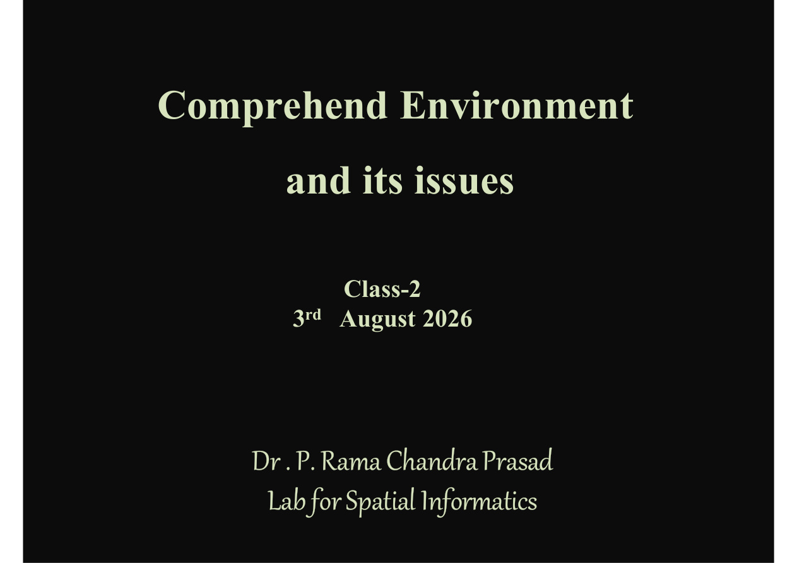
Comprehend Environment
- •Comprehend Environment and its issues Dr . P. Rama Chandra Prasad Lab for Spatial Informatics
This slide presents essential concepts in Lecture 02: Comprehend Environment. Specifically, it examines Comprehend Environment and its issues Dr . P. Rama Chandra Prasad Lab for Spatial Informatics. In the broader context of Earth spheres (Atmosphere, Hydrosphere, Lithosphere, Biosphere), Garrett Hardin's Tragedy of the Commons (1968), IPAT identity (I = P x A x T), Easter Island collapse, Baltic Sea algal blooms, Sacred Groves, Kolleru Lake degradation, ecological footprint, biocapacity, Earth Overshoot Day, and Human Development Index (HDI)., mastering this material is critical for analyzing ecological tradeoffs, regulatory frameworks, and exam questions on environmental system dynamics.
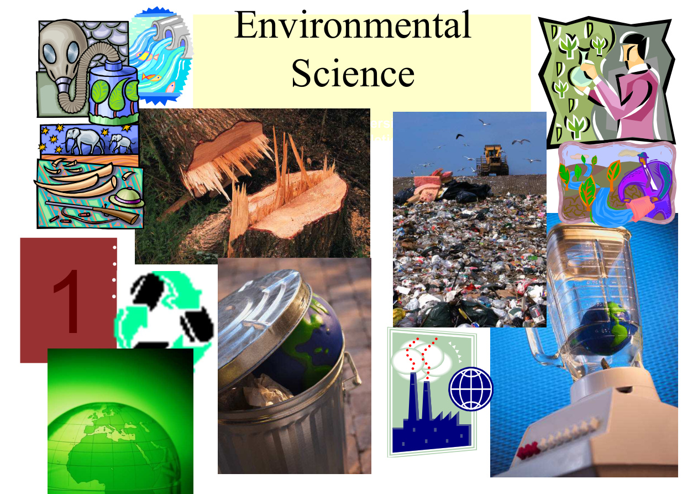
Environmental
- •Environmental Science Air Pollution Global climate
This slide presents essential concepts in Lecture 02: Environmental. Specifically, it examines Environmental Science Air Pollution Global climate. In the broader context of Earth spheres (Atmosphere, Hydrosphere, Lithosphere, Biosphere), Garrett Hardin's Tragedy of the Commons (1968), IPAT identity (I = P x A x T), Easter Island collapse, Baltic Sea algal blooms, Sacred Groves, Kolleru Lake degradation, ecological footprint, biocapacity, Earth Overshoot Day, and Human Development Index (HDI)., mastering this material is critical for analyzing ecological tradeoffs, regulatory frameworks, and exam questions on environmental system dynamics.
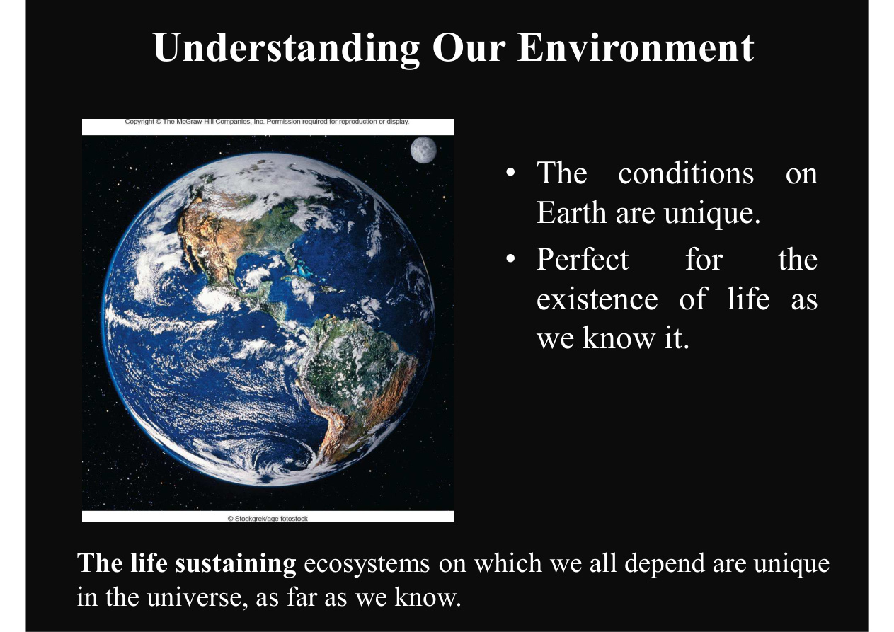
Understanding Our Environment
- •Understanding Our Environment • The conditions Earth are unique.
This slide presents essential concepts in Lecture 02: Understanding Our Environment. Specifically, it examines Understanding Our Environment • The conditions Earth are unique.. In the broader context of Earth spheres (Atmosphere, Hydrosphere, Lithosphere, Biosphere), Garrett Hardin's Tragedy of the Commons (1968), IPAT identity (I = P x A x T), Easter Island collapse, Baltic Sea algal blooms, Sacred Groves, Kolleru Lake degradation, ecological footprint, biocapacity, Earth Overshoot Day, and Human Development Index (HDI)., mastering this material is critical for analyzing ecological tradeoffs, regulatory frameworks, and exam questions on environmental system dynamics.
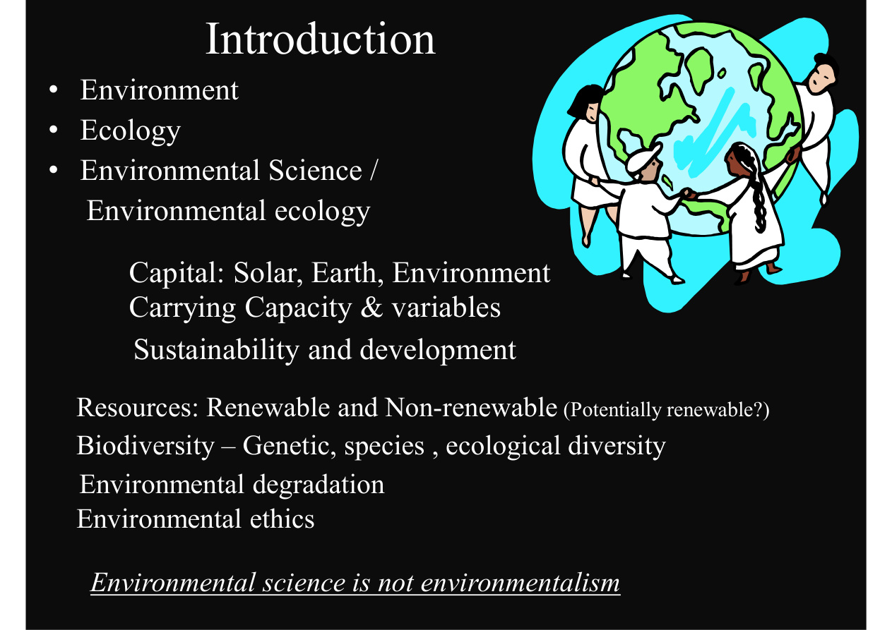
Introduction
- •Introduction • Environment • Ecology • Environmental Science /
This slide presents essential concepts in Lecture 02: Introduction. Specifically, it examines Introduction • Environment • Ecology • Environmental Science /. In the broader context of Earth spheres (Atmosphere, Hydrosphere, Lithosphere, Biosphere), Garrett Hardin's Tragedy of the Commons (1968), IPAT identity (I = P x A x T), Easter Island collapse, Baltic Sea algal blooms, Sacred Groves, Kolleru Lake degradation, ecological footprint, biocapacity, Earth Overshoot Day, and Human Development Index (HDI)., mastering this material is critical for analyzing ecological tradeoffs, regulatory frameworks, and exam questions on environmental system dynamics.
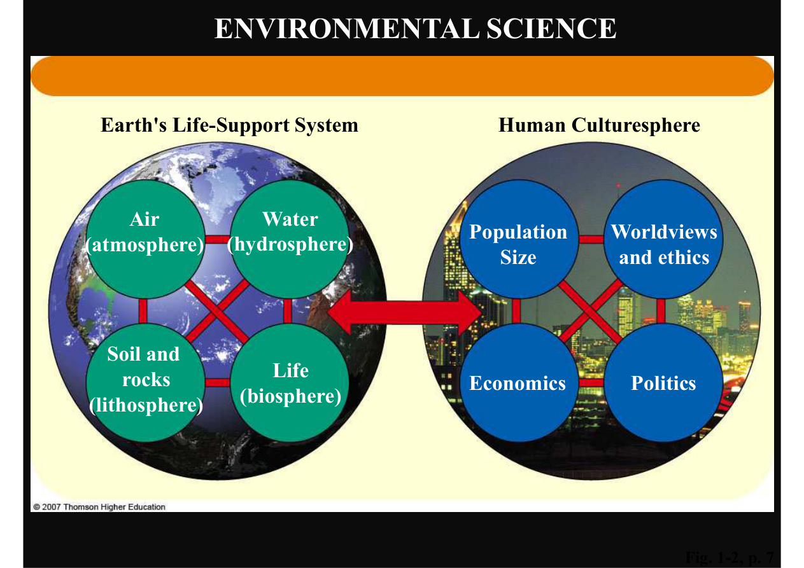
Fig. 1-2, p. 7
- •Fig. 1-2, p. 7 Air (atmosphere) ENVIRONMENTAL SCIENCE
This slide presents essential concepts in Lecture 02: Fig. 1-2, p. 7. Specifically, it examines Fig. 1-2, p. 7 Air (atmosphere) ENVIRONMENTAL SCIENCE. In the broader context of Earth spheres (Atmosphere, Hydrosphere, Lithosphere, Biosphere), Garrett Hardin's Tragedy of the Commons (1968), IPAT identity (I = P x A x T), Easter Island collapse, Baltic Sea algal blooms, Sacred Groves, Kolleru Lake degradation, ecological footprint, biocapacity, Earth Overshoot Day, and Human Development Index (HDI)., mastering this material is critical for analyzing ecological tradeoffs, regulatory frameworks, and exam questions on environmental system dynamics.
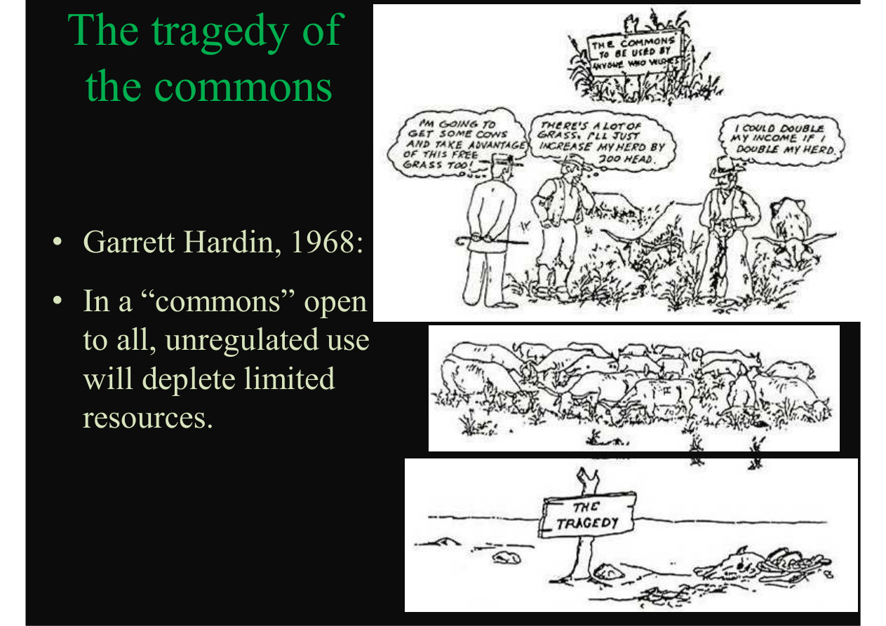
• Garrett Hardin, 1968:
- •• Garrett Hardin, 1968: • In a “commons” open to all, unregulated use will deplete limited
This slide establishes the foundational socioeconomic mechanics of environmental degradation: Garrett Hardin's 1968 'Tragedy of the Commons' (unregulated open-access resources inevitably suffer overexploitation because individual gain exceeds fractional shared cost) and the IPAT formulation ($I = P \times A \times T$), formalizing how population, per-capita affluence, and technology drive planetary impact.
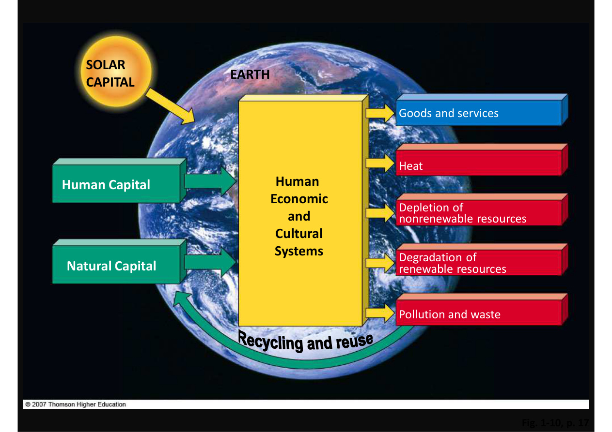
Fig. 1-10, p. 17
- •Fig. 1-10, p. 17 Depletion of nonrenewable resources SOLAR
This slide presents essential concepts in Lecture 02: Fig. 1-10, p. 17. Specifically, it examines Fig. 1-10, p. 17 Depletion of nonrenewable resources SOLAR. In the broader context of Earth spheres (Atmosphere, Hydrosphere, Lithosphere, Biosphere), Garrett Hardin's Tragedy of the Commons (1968), IPAT identity (I = P x A x T), Easter Island collapse, Baltic Sea algal blooms, Sacred Groves, Kolleru Lake degradation, ecological footprint, biocapacity, Earth Overshoot Day, and Human Development Index (HDI)., mastering this material is critical for analyzing ecological tradeoffs, regulatory frameworks, and exam questions on environmental system dynamics.
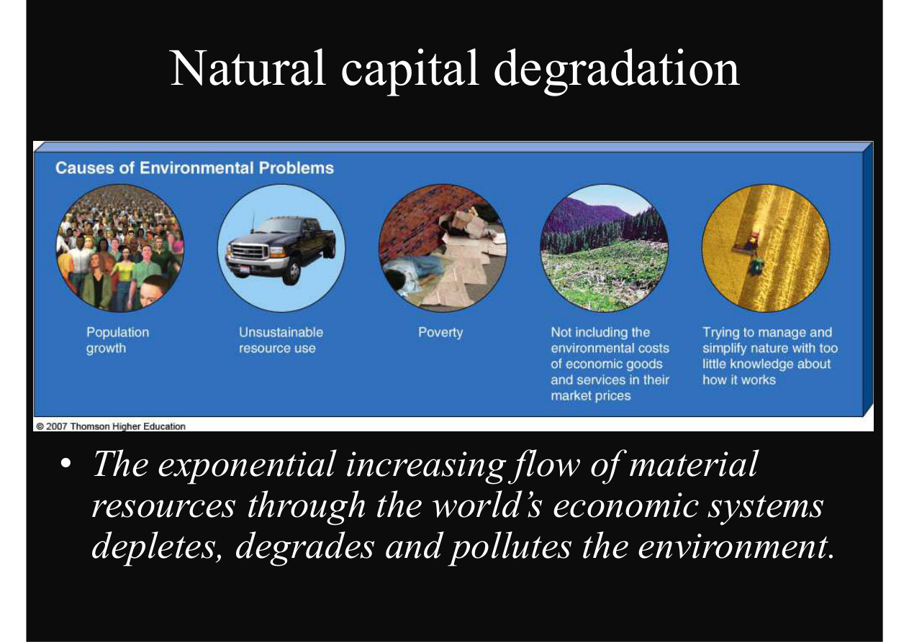
Natural capital degradation
- •Natural capital degradation • The exponential increasing flow of material resources through the world’s economic systems depletes, degrades and pollutes the environment.
This slide presents essential concepts in Lecture 02: Natural capital degradation. Specifically, it examines Natural capital degradation • The exponential increasing flow of material resources through the world’s economic systems depletes, degrades and pollutes the environment.. In the broader context of Earth spheres (Atmosphere, Hydrosphere, Lithosphere, Biosphere), Garrett Hardin's Tragedy of the Commons (1968), IPAT identity (I = P x A x T), Easter Island collapse, Baltic Sea algal blooms, Sacred Groves, Kolleru Lake degradation, ecological footprint, biocapacity, Earth Overshoot Day, and Human Development Index (HDI)., mastering this material is critical for analyzing ecological tradeoffs, regulatory frameworks, and exam questions on environmental system dynamics.
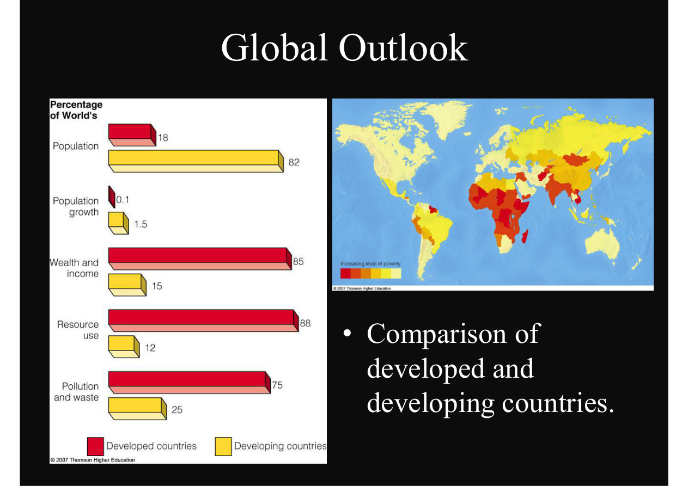
Global Outlook
- •Global Outlook • Comparison of developed and developing countries.
This slide presents essential concepts in Lecture 02: Global Outlook. Specifically, it examines Global Outlook • Comparison of developed and developing countries.. In the broader context of Earth spheres (Atmosphere, Hydrosphere, Lithosphere, Biosphere), Garrett Hardin's Tragedy of the Commons (1968), IPAT identity (I = P x A x T), Easter Island collapse, Baltic Sea algal blooms, Sacred Groves, Kolleru Lake degradation, ecological footprint, biocapacity, Earth Overshoot Day, and Human Development Index (HDI)., mastering this material is critical for analyzing ecological tradeoffs, regulatory frameworks, and exam questions on environmental system dynamics.
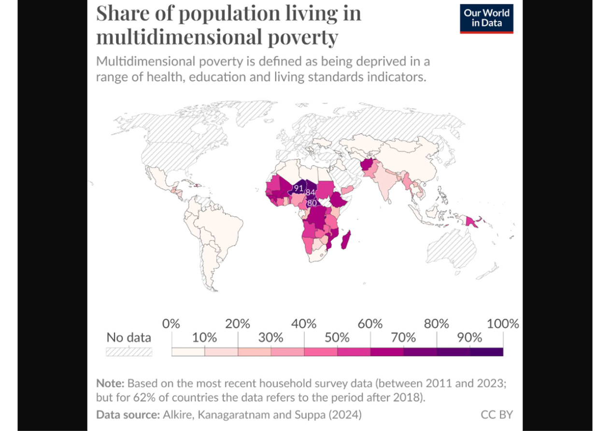
Slide 10
Visual figure / diagram presentation slide. Review the high-resolution render on the left.
This visual slide in Lecture 02 illustrates core structural mechanisms and empirical data for Slide 10. It provides essential visual context within the curriculum of Earth spheres (Atmosphere, Hydrosphere, Lithosphere, Biosphere), Garrett Hardin's Tragedy of the Commons (1968), IPAT identity (I = P x A x T), Easter Island collapse, Baltic Sea algal blooms, Sacred Groves, Kolleru Lake degradation, ecological footprint, biocapacity, Earth Overshoot Day, and Human Development Index (HDI)., directly connecting theoretical principles with real-world environmental technology observations.
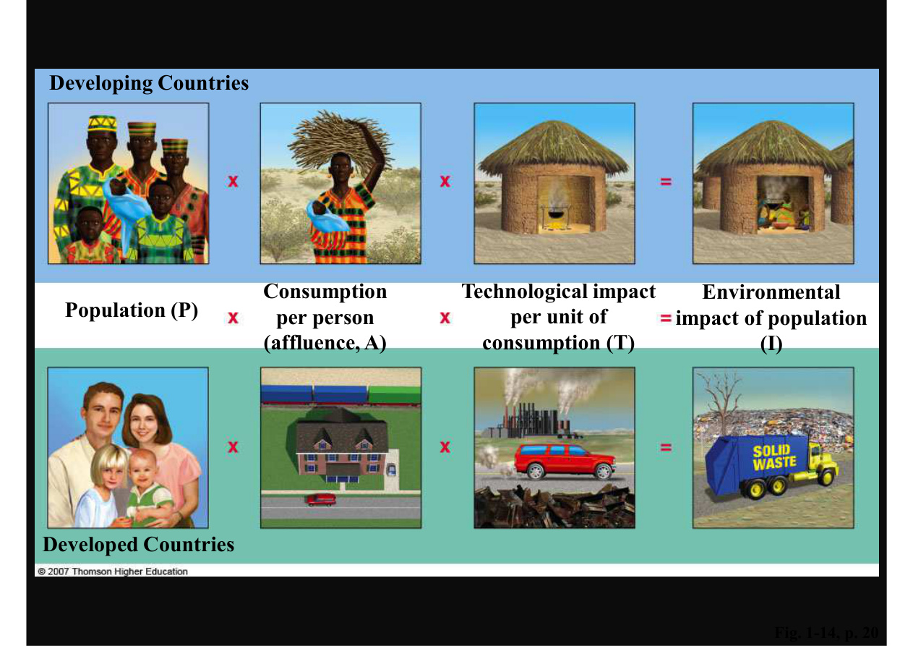
Fig. 1-14, p. 20
- •Fig. 1-14, p. 20 Developing Countries Population (P) Consumption
This slide presents essential concepts in Lecture 02: Fig. 1-14, p. 20. Specifically, it examines Fig. 1-14, p. 20 Developing Countries Population (P) Consumption. In the broader context of Earth spheres (Atmosphere, Hydrosphere, Lithosphere, Biosphere), Garrett Hardin's Tragedy of the Commons (1968), IPAT identity (I = P x A x T), Easter Island collapse, Baltic Sea algal blooms, Sacred Groves, Kolleru Lake degradation, ecological footprint, biocapacity, Earth Overshoot Day, and Human Development Index (HDI)., mastering this material is critical for analyzing ecological tradeoffs, regulatory frameworks, and exam questions on environmental system dynamics.
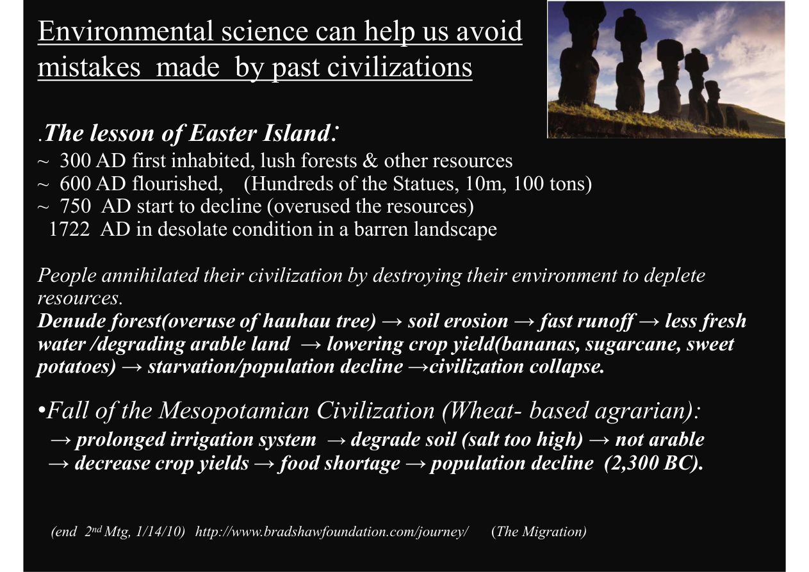
Environmental science can help us avoid
- •Environmental science can help us avoid mistakes made by past civilizations .The lesson of Easter Island: ~ 300 AD first inhabited, lush forests & other resources
This slide presents essential concepts in Lecture 02: Environmental science can help us avoid. Specifically, it examines Environmental science can help us avoid mistakes made by past civilizations .The lesson of Easter Island: ~ 300 AD first inhabited, lush forests & other resources. In the broader context of Earth spheres (Atmosphere, Hydrosphere, Lithosphere, Biosphere), Garrett Hardin's Tragedy of the Commons (1968), IPAT identity (I = P x A x T), Easter Island collapse, Baltic Sea algal blooms, Sacred Groves, Kolleru Lake degradation, ecological footprint, biocapacity, Earth Overshoot Day, and Human Development Index (HDI)., mastering this material is critical for analyzing ecological tradeoffs, regulatory frameworks, and exam questions on environmental system dynamics.
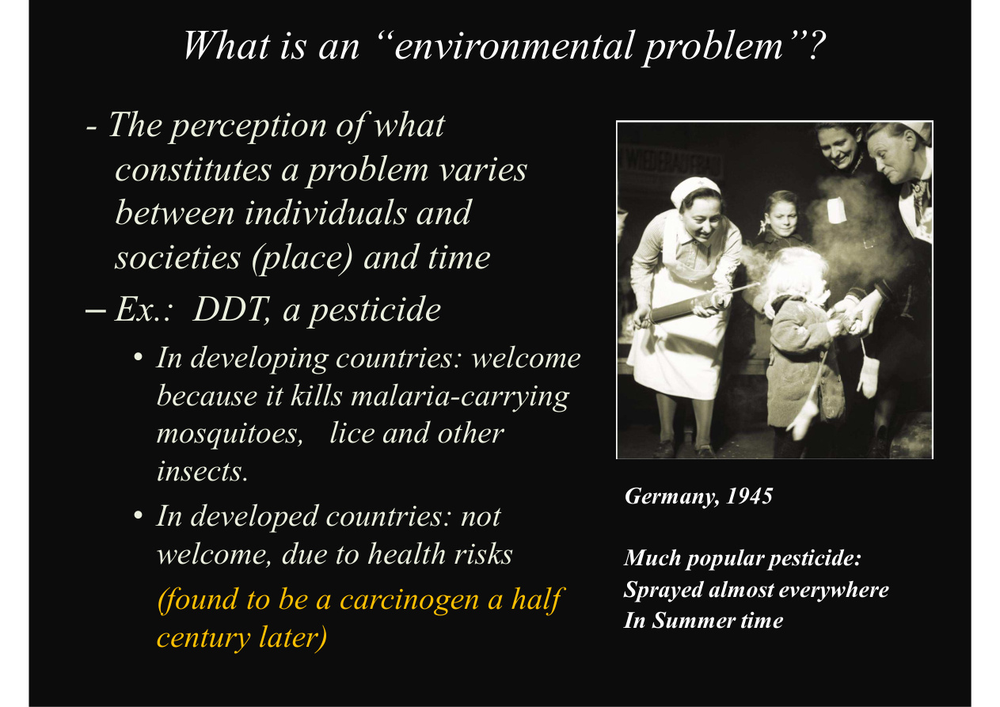
What is an “environmental problem”?
- •What is an “environmental problem”? - The perception of what constitutes a problem varies between individuals and
This slide presents essential concepts in Lecture 02: What is an “environmental problem”?. Specifically, it examines What is an “environmental problem”? - The perception of what constitutes a problem varies between individuals and. In the broader context of Earth spheres (Atmosphere, Hydrosphere, Lithosphere, Biosphere), Garrett Hardin's Tragedy of the Commons (1968), IPAT identity (I = P x A x T), Easter Island collapse, Baltic Sea algal blooms, Sacred Groves, Kolleru Lake degradation, ecological footprint, biocapacity, Earth Overshoot Day, and Human Development Index (HDI)., mastering this material is critical for analyzing ecological tradeoffs, regulatory frameworks, and exam questions on environmental system dynamics.
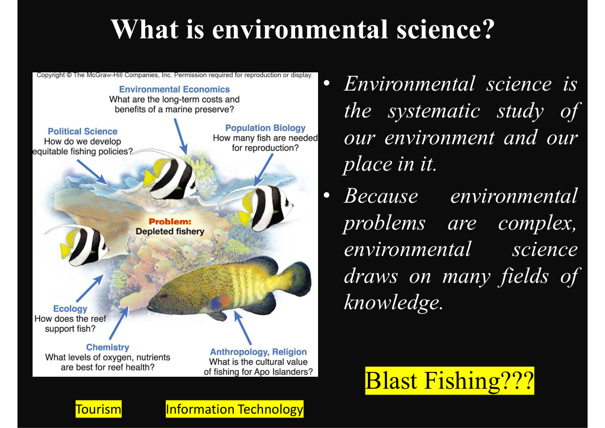
What is environmental science?
- •What is environmental science? • Environmental science is the systematic study of our environment and our
This slide presents essential concepts in Lecture 02: What is environmental science?. Specifically, it examines What is environmental science? • Environmental science is the systematic study of our environment and our. In the broader context of Earth spheres (Atmosphere, Hydrosphere, Lithosphere, Biosphere), Garrett Hardin's Tragedy of the Commons (1968), IPAT identity (I = P x A x T), Easter Island collapse, Baltic Sea algal blooms, Sacred Groves, Kolleru Lake degradation, ecological footprint, biocapacity, Earth Overshoot Day, and Human Development Index (HDI)., mastering this material is critical for analyzing ecological tradeoffs, regulatory frameworks, and exam questions on environmental system dynamics.
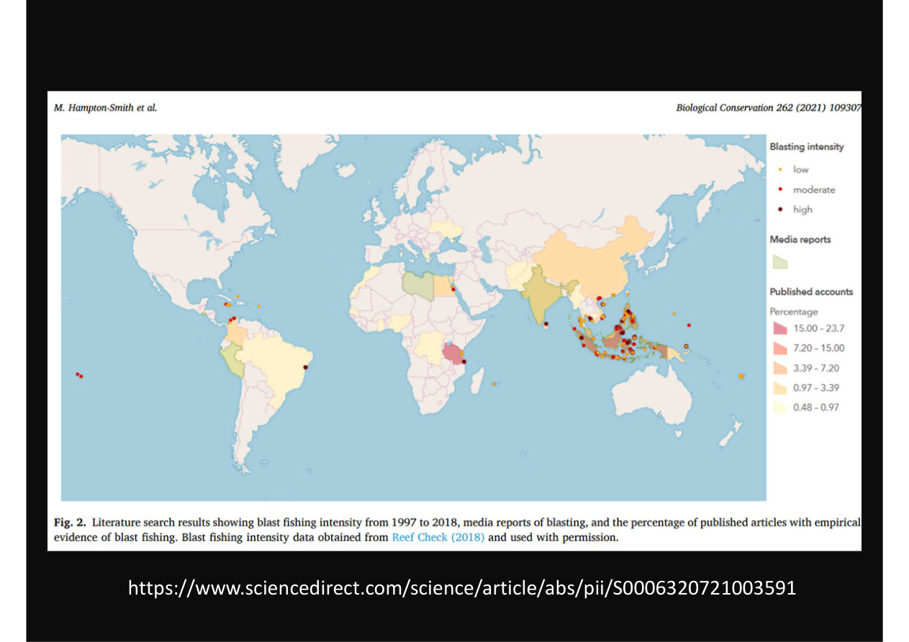
https://www.sciencedirect.com/science/article/abs/pii/S0006320...
Visual figure / diagram presentation slide. Review the high-resolution render on the left.
This slide presents essential concepts in Lecture 02: https://www.sciencedirect.com/science/article/abs/pii/S0006320.... Specifically, it examines https://www.sciencedirect.com/science/article/abs/pii/S0006320721003591. In the broader context of Earth spheres (Atmosphere, Hydrosphere, Lithosphere, Biosphere), Garrett Hardin's Tragedy of the Commons (1968), IPAT identity (I = P x A x T), Easter Island collapse, Baltic Sea algal blooms, Sacred Groves, Kolleru Lake degradation, ecological footprint, biocapacity, Earth Overshoot Day, and Human Development Index (HDI)., mastering this material is critical for analyzing ecological tradeoffs, regulatory frameworks, and exam questions on environmental system dynamics.
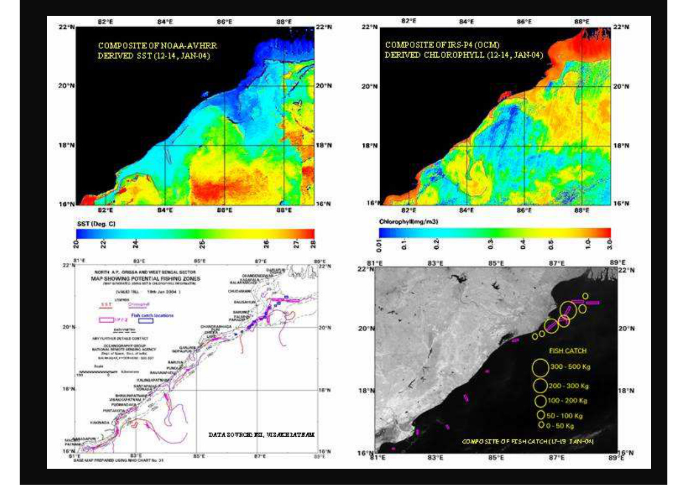
Slide 16
Visual figure / diagram presentation slide. Review the high-resolution render on the left.
This visual slide in Lecture 02 illustrates core structural mechanisms and empirical data for Slide 16. It provides essential visual context within the curriculum of Earth spheres (Atmosphere, Hydrosphere, Lithosphere, Biosphere), Garrett Hardin's Tragedy of the Commons (1968), IPAT identity (I = P x A x T), Easter Island collapse, Baltic Sea algal blooms, Sacred Groves, Kolleru Lake degradation, ecological footprint, biocapacity, Earth Overshoot Day, and Human Development Index (HDI)., directly connecting theoretical principles with real-world environmental technology observations.
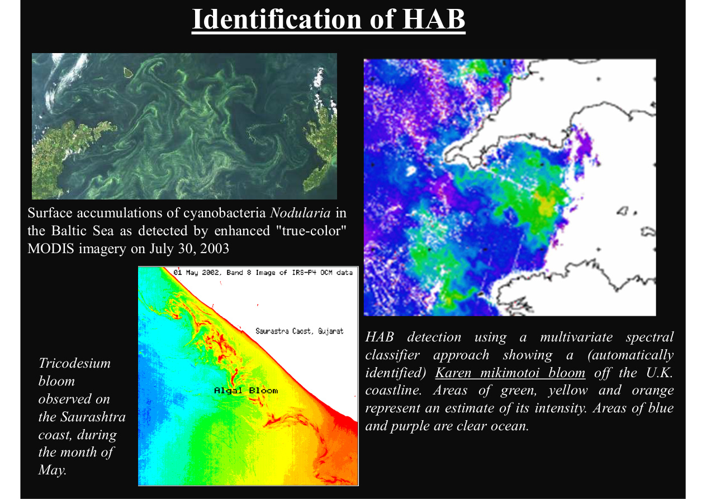
Surface accumulations of cyanobacteria Nodularia in
- •Surface accumulations of cyanobacteria Nodularia in the Baltic Sea as detected by enhanced "true-color" MODIS imagery on July 30, 2003 HAB
This slide presents essential concepts in Lecture 02: Surface accumulations of cyanobacteria Nodularia in. Specifically, it examines Surface accumulations of cyanobacteria Nodularia in the Baltic Sea as detected by enhanced "true-color" MODIS imagery on July 30, 2003 HAB. In the broader context of Earth spheres (Atmosphere, Hydrosphere, Lithosphere, Biosphere), Garrett Hardin's Tragedy of the Commons (1968), IPAT identity (I = P x A x T), Easter Island collapse, Baltic Sea algal blooms, Sacred Groves, Kolleru Lake degradation, ecological footprint, biocapacity, Earth Overshoot Day, and Human Development Index (HDI)., mastering this material is critical for analyzing ecological tradeoffs, regulatory frameworks, and exam questions on environmental system dynamics.
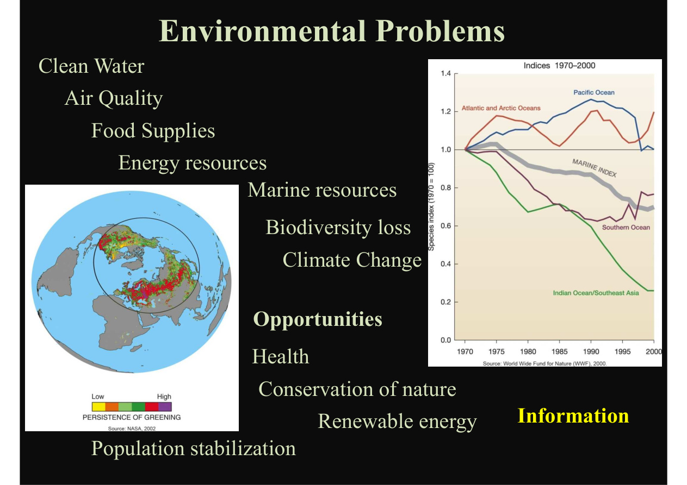
Environmental Problems
- •Environmental Problems Clean Water Air Quality Food Supplies
This slide presents essential concepts in Lecture 02: Environmental Problems. Specifically, it examines Environmental Problems Clean Water Air Quality Food Supplies. In the broader context of Earth spheres (Atmosphere, Hydrosphere, Lithosphere, Biosphere), Garrett Hardin's Tragedy of the Commons (1968), IPAT identity (I = P x A x T), Easter Island collapse, Baltic Sea algal blooms, Sacred Groves, Kolleru Lake degradation, ecological footprint, biocapacity, Earth Overshoot Day, and Human Development Index (HDI)., mastering this material is critical for analyzing ecological tradeoffs, regulatory frameworks, and exam questions on environmental system dynamics.
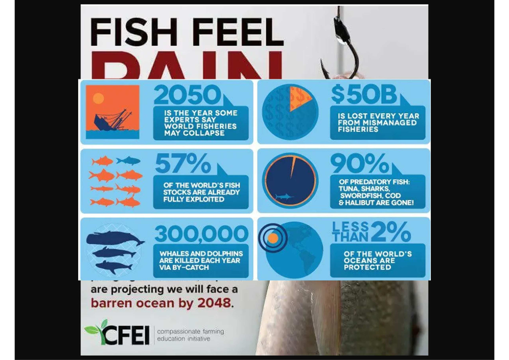
Slide 19
Visual figure / diagram presentation slide. Review the high-resolution render on the left.
This visual slide in Lecture 02 illustrates core structural mechanisms and empirical data for Slide 19. It provides essential visual context within the curriculum of Earth spheres (Atmosphere, Hydrosphere, Lithosphere, Biosphere), Garrett Hardin's Tragedy of the Commons (1968), IPAT identity (I = P x A x T), Easter Island collapse, Baltic Sea algal blooms, Sacred Groves, Kolleru Lake degradation, ecological footprint, biocapacity, Earth Overshoot Day, and Human Development Index (HDI)., directly connecting theoretical principles with real-world environmental technology observations.
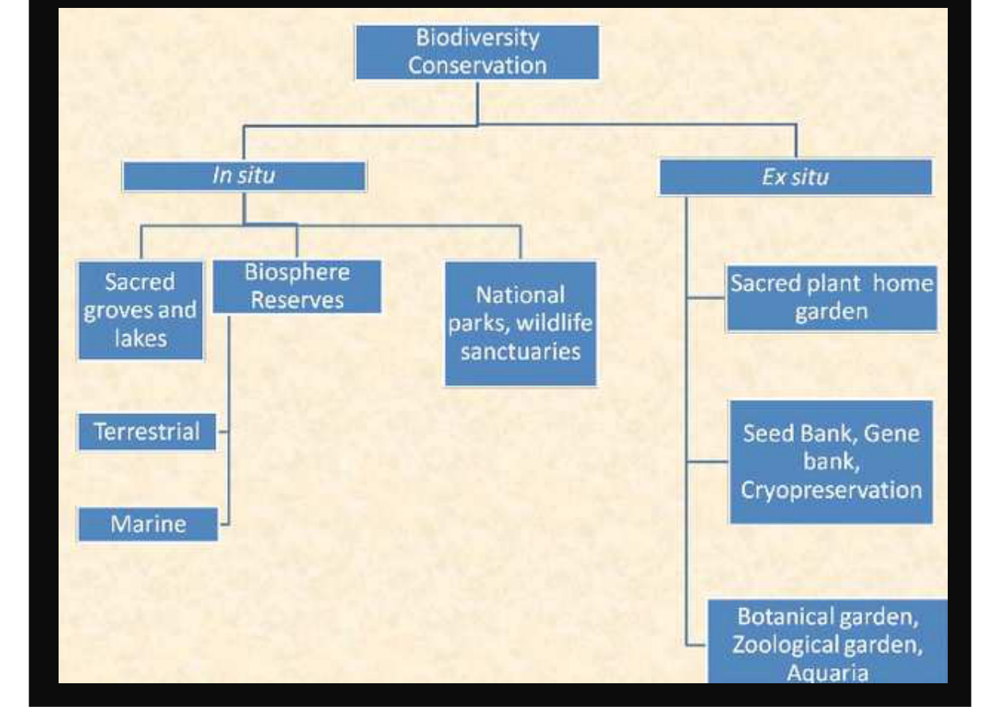
Slide 20
Visual figure / diagram presentation slide. Review the high-resolution render on the left.
This visual slide in Lecture 02 illustrates core structural mechanisms and empirical data for Slide 20. It provides essential visual context within the curriculum of Earth spheres (Atmosphere, Hydrosphere, Lithosphere, Biosphere), Garrett Hardin's Tragedy of the Commons (1968), IPAT identity (I = P x A x T), Easter Island collapse, Baltic Sea algal blooms, Sacred Groves, Kolleru Lake degradation, ecological footprint, biocapacity, Earth Overshoot Day, and Human Development Index (HDI)., directly connecting theoretical principles with real-world environmental technology observations.
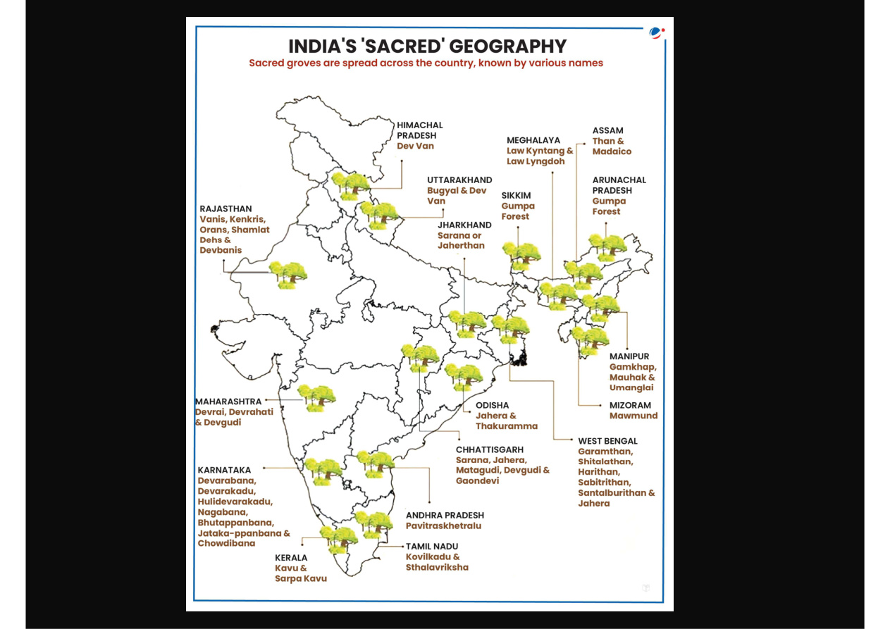
Slide 21
Visual figure / diagram presentation slide. Review the high-resolution render on the left.
This visual slide in Lecture 02 illustrates core structural mechanisms and empirical data for Slide 21. It provides essential visual context within the curriculum of Earth spheres (Atmosphere, Hydrosphere, Lithosphere, Biosphere), Garrett Hardin's Tragedy of the Commons (1968), IPAT identity (I = P x A x T), Easter Island collapse, Baltic Sea algal blooms, Sacred Groves, Kolleru Lake degradation, ecological footprint, biocapacity, Earth Overshoot Day, and Human Development Index (HDI)., directly connecting theoretical principles with real-world environmental technology observations.
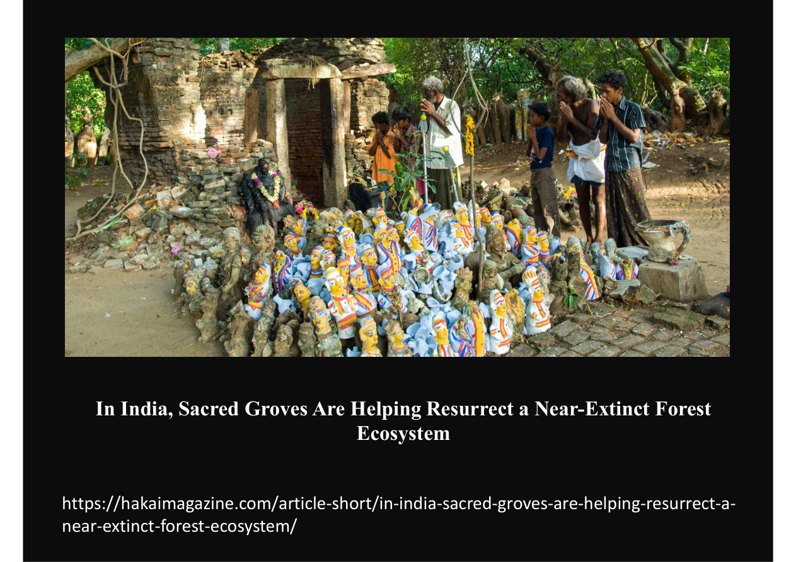
https://hakaimagazine.com/article-short/in-india-sacred-groves...
Visual figure / diagram presentation slide. Review the high-resolution render on the left.
This slide presents essential concepts in Lecture 02: https://hakaimagazine.com/article-short/in-india-sacred-groves.... Specifically, it examines https://hakaimagazine.com/article-short/in-india-sacred-groves-are-helping-resurrect-a- near-extinct-forest-ecosystem/ I. In the broader context of Earth spheres (Atmosphere, Hydrosphere, Lithosphere, Biosphere), Garrett Hardin's Tragedy of the Commons (1968), IPAT identity (I = P x A x T), Easter Island collapse, Baltic Sea algal blooms, Sacred Groves, Kolleru Lake degradation, ecological footprint, biocapacity, Earth Overshoot Day, and Human Development Index (HDI)., mastering this material is critical for analyzing ecological tradeoffs, regulatory frameworks, and exam questions on environmental system dynamics.
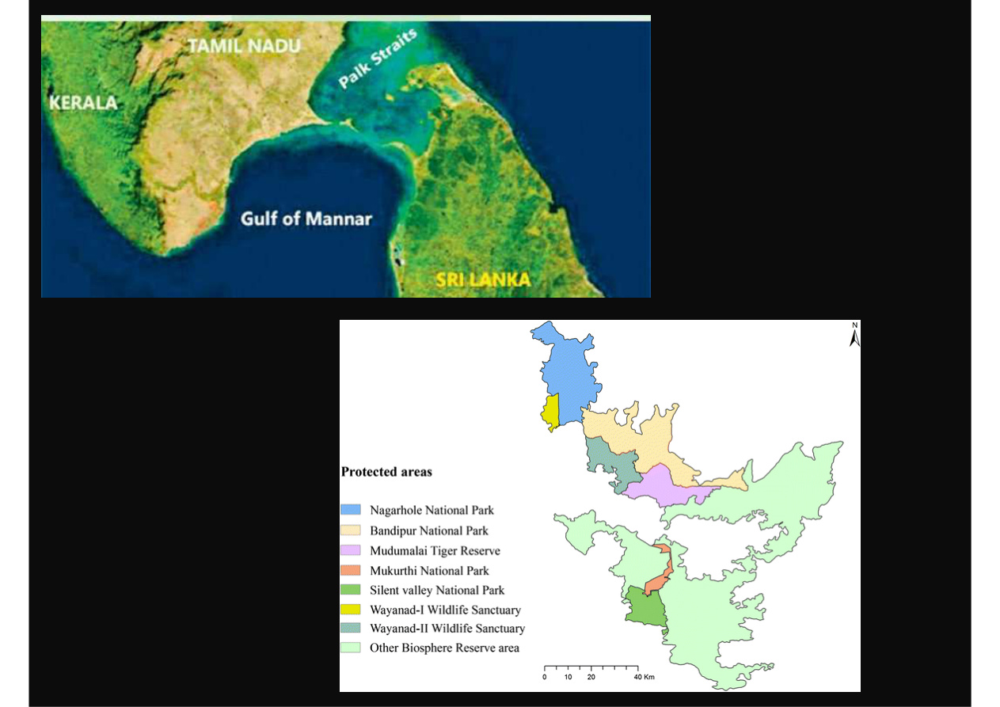
Slide 23
Visual figure / diagram presentation slide. Review the high-resolution render on the left.
This visual slide in Lecture 02 illustrates core structural mechanisms and empirical data for Slide 23. It provides essential visual context within the curriculum of Earth spheres (Atmosphere, Hydrosphere, Lithosphere, Biosphere), Garrett Hardin's Tragedy of the Commons (1968), IPAT identity (I = P x A x T), Easter Island collapse, Baltic Sea algal blooms, Sacred Groves, Kolleru Lake degradation, ecological footprint, biocapacity, Earth Overshoot Day, and Human Development Index (HDI)., directly connecting theoretical principles with real-world environmental technology observations.
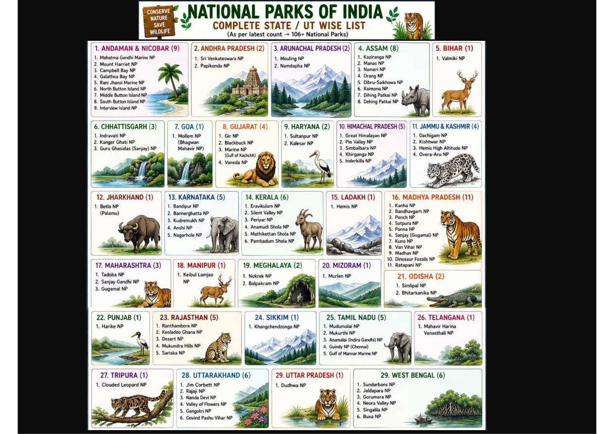
Slide 24
Visual figure / diagram presentation slide. Review the high-resolution render on the left.
This visual slide in Lecture 02 illustrates core structural mechanisms and empirical data for Slide 24. It provides essential visual context within the curriculum of Earth spheres (Atmosphere, Hydrosphere, Lithosphere, Biosphere), Garrett Hardin's Tragedy of the Commons (1968), IPAT identity (I = P x A x T), Easter Island collapse, Baltic Sea algal blooms, Sacred Groves, Kolleru Lake degradation, ecological footprint, biocapacity, Earth Overshoot Day, and Human Development Index (HDI)., directly connecting theoretical principles with real-world environmental technology observations.
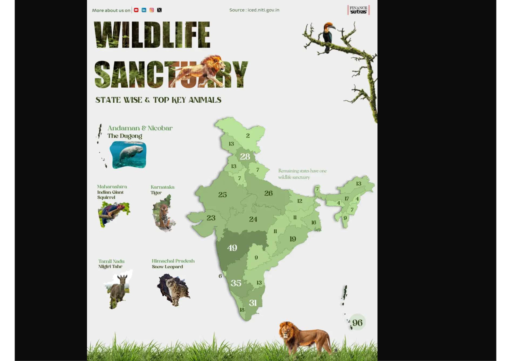
Slide 25
Visual figure / diagram presentation slide. Review the high-resolution render on the left.
This visual slide in Lecture 02 illustrates core structural mechanisms and empirical data for Slide 25. It provides essential visual context within the curriculum of Earth spheres (Atmosphere, Hydrosphere, Lithosphere, Biosphere), Garrett Hardin's Tragedy of the Commons (1968), IPAT identity (I = P x A x T), Easter Island collapse, Baltic Sea algal blooms, Sacred Groves, Kolleru Lake degradation, ecological footprint, biocapacity, Earth Overshoot Day, and Human Development Index (HDI)., directly connecting theoretical principles with real-world environmental technology observations.
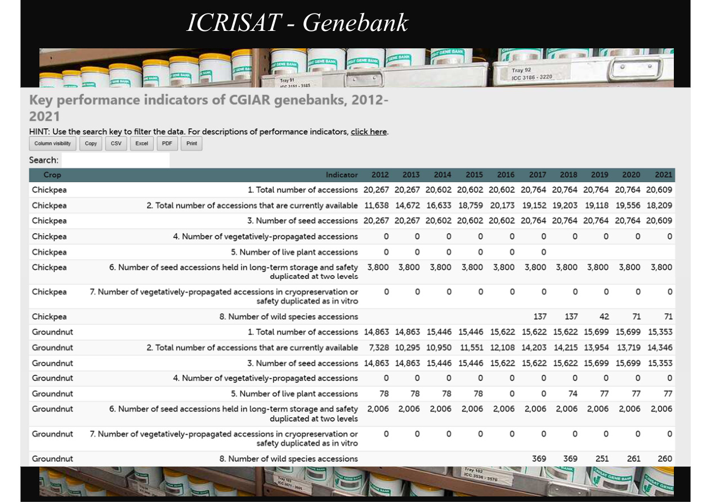
ICRISAT - Genebank
- •ICRISAT - Genebank
This visual slide in Lecture 02 illustrates core structural mechanisms and empirical data for ICRISAT - Genebank. It provides essential visual context within the curriculum of Earth spheres (Atmosphere, Hydrosphere, Lithosphere, Biosphere), Garrett Hardin's Tragedy of the Commons (1968), IPAT identity (I = P x A x T), Easter Island collapse, Baltic Sea algal blooms, Sacred Groves, Kolleru Lake degradation, ecological footprint, biocapacity, Earth Overshoot Day, and Human Development Index (HDI)., directly connecting theoretical principles with real-world environmental technology observations.
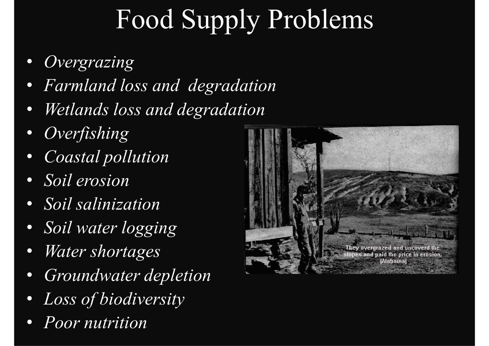
Food Supply Problems
- •Food Supply Problems • Overgrazing • Farmland loss and degradation • Wetlands loss and degradation
This slide presents essential concepts in Lecture 02: Food Supply Problems. Specifically, it examines Food Supply Problems • Overgrazing • Farmland loss and degradation • Wetlands loss and degradation. In the broader context of Earth spheres (Atmosphere, Hydrosphere, Lithosphere, Biosphere), Garrett Hardin's Tragedy of the Commons (1968), IPAT identity (I = P x A x T), Easter Island collapse, Baltic Sea algal blooms, Sacred Groves, Kolleru Lake degradation, ecological footprint, biocapacity, Earth Overshoot Day, and Human Development Index (HDI)., mastering this material is critical for analyzing ecological tradeoffs, regulatory frameworks, and exam questions on environmental system dynamics.
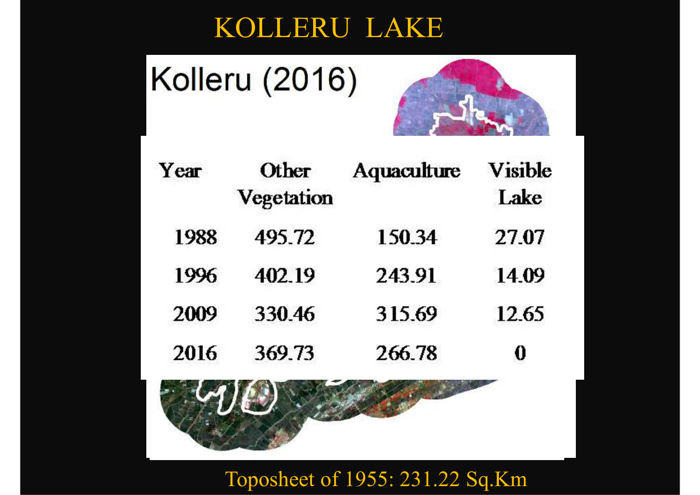
KOLLERU LAKE
- •KOLLERU LAKE Toposheet of 1955: 231.22 Sq.Km
This slide presents essential concepts in Lecture 02: KOLLERU LAKE. Specifically, it examines KOLLERU LAKE Toposheet of 1955: 231.22 Sq.Km. In the broader context of Earth spheres (Atmosphere, Hydrosphere, Lithosphere, Biosphere), Garrett Hardin's Tragedy of the Commons (1968), IPAT identity (I = P x A x T), Easter Island collapse, Baltic Sea algal blooms, Sacred Groves, Kolleru Lake degradation, ecological footprint, biocapacity, Earth Overshoot Day, and Human Development Index (HDI)., mastering this material is critical for analyzing ecological tradeoffs, regulatory frameworks, and exam questions on environmental system dynamics.
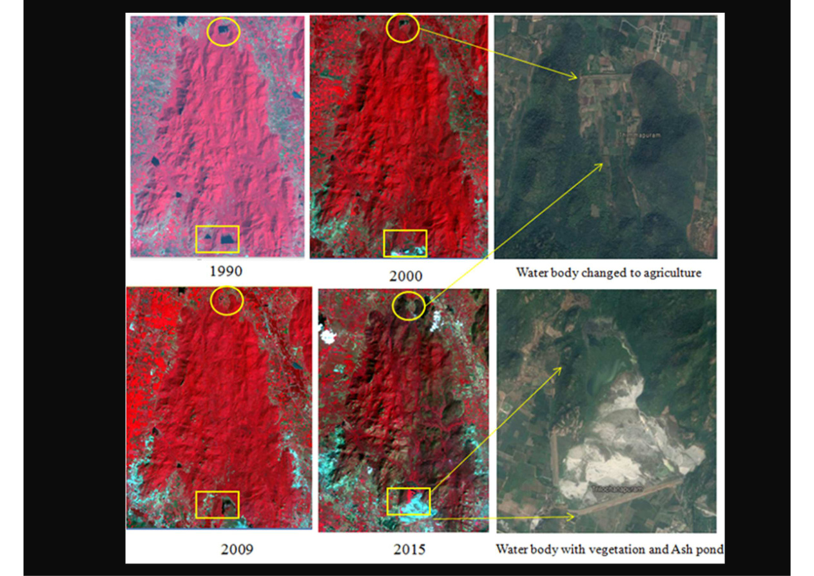
Slide 29
Visual figure / diagram presentation slide. Review the high-resolution render on the left.
This visual slide in Lecture 02 illustrates core structural mechanisms and empirical data for Slide 29. It provides essential visual context within the curriculum of Earth spheres (Atmosphere, Hydrosphere, Lithosphere, Biosphere), Garrett Hardin's Tragedy of the Commons (1968), IPAT identity (I = P x A x T), Easter Island collapse, Baltic Sea algal blooms, Sacred Groves, Kolleru Lake degradation, ecological footprint, biocapacity, Earth Overshoot Day, and Human Development Index (HDI)., directly connecting theoretical principles with real-world environmental technology observations.
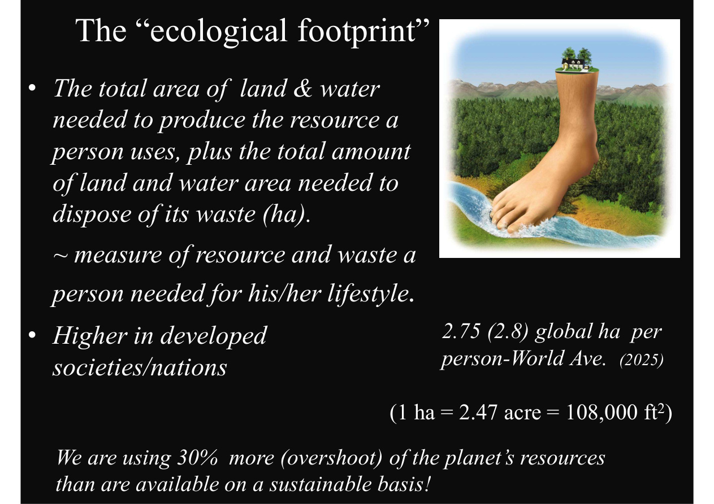
The “ecological footprint”
- •The “ecological footprint” • The total area of land & water needed to produce the resource a person uses, plus the total amount
This slide presents essential concepts in Lecture 02: The “ecological footprint”. Specifically, it examines The “ecological footprint” • The total area of land & water needed to produce the resource a person uses, plus the total amount. In the broader context of Earth spheres (Atmosphere, Hydrosphere, Lithosphere, Biosphere), Garrett Hardin's Tragedy of the Commons (1968), IPAT identity (I = P x A x T), Easter Island collapse, Baltic Sea algal blooms, Sacred Groves, Kolleru Lake degradation, ecological footprint, biocapacity, Earth Overshoot Day, and Human Development Index (HDI)., mastering this material is critical for analyzing ecological tradeoffs, regulatory frameworks, and exam questions on environmental system dynamics.
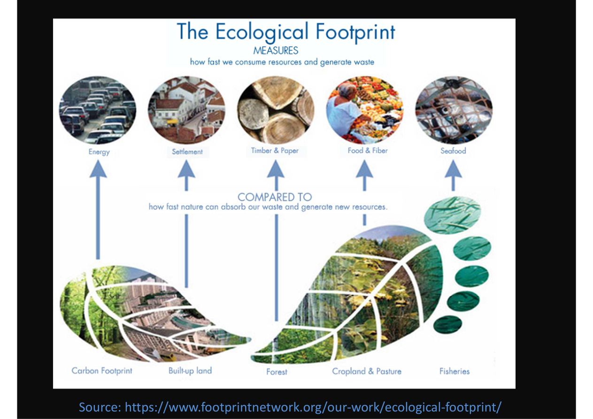
Source: https://www.footprintnetwork.org/our-work/ecological-f...
- •Source: https://www.footprintnetwork.org/our-work/ecological-footprint/
This slide presents essential concepts in Lecture 02: Source: https://www.footprintnetwork.org/our-work/ecological-f.... Specifically, it examines Source: https://www.footprintnetwork.org/our-work/ecological-footprint/. In the broader context of Earth spheres (Atmosphere, Hydrosphere, Lithosphere, Biosphere), Garrett Hardin's Tragedy of the Commons (1968), IPAT identity (I = P x A x T), Easter Island collapse, Baltic Sea algal blooms, Sacred Groves, Kolleru Lake degradation, ecological footprint, biocapacity, Earth Overshoot Day, and Human Development Index (HDI)., mastering this material is critical for analyzing ecological tradeoffs, regulatory frameworks, and exam questions on environmental system dynamics.
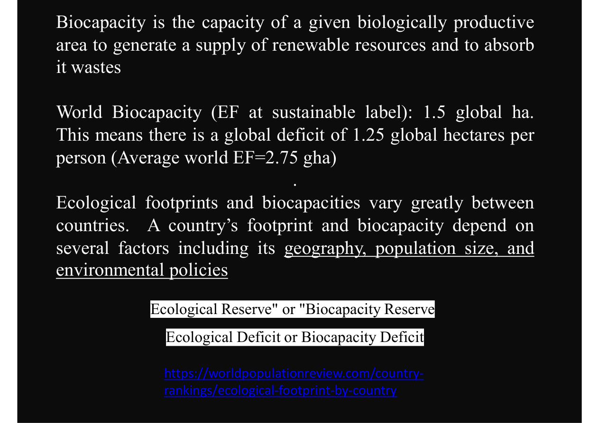
https://worldpopulationreview.com/country-
Visual figure / diagram presentation slide. Review the high-resolution render on the left.
This slide presents essential concepts in Lecture 02: https://worldpopulationreview.com/country-. Specifically, it examines https://worldpopulationreview.com/country- rankings/ecological-footprint-by-country Biocapacity is the capacity of a giv. In the broader context of Earth spheres (Atmosphere, Hydrosphere, Lithosphere, Biosphere), Garrett Hardin's Tragedy of the Commons (1968), IPAT identity (I = P x A x T), Easter Island collapse, Baltic Sea algal blooms, Sacred Groves, Kolleru Lake degradation, ecological footprint, biocapacity, Earth Overshoot Day, and Human Development Index (HDI)., mastering this material is critical for analyzing ecological tradeoffs, regulatory frameworks, and exam questions on environmental system dynamics.
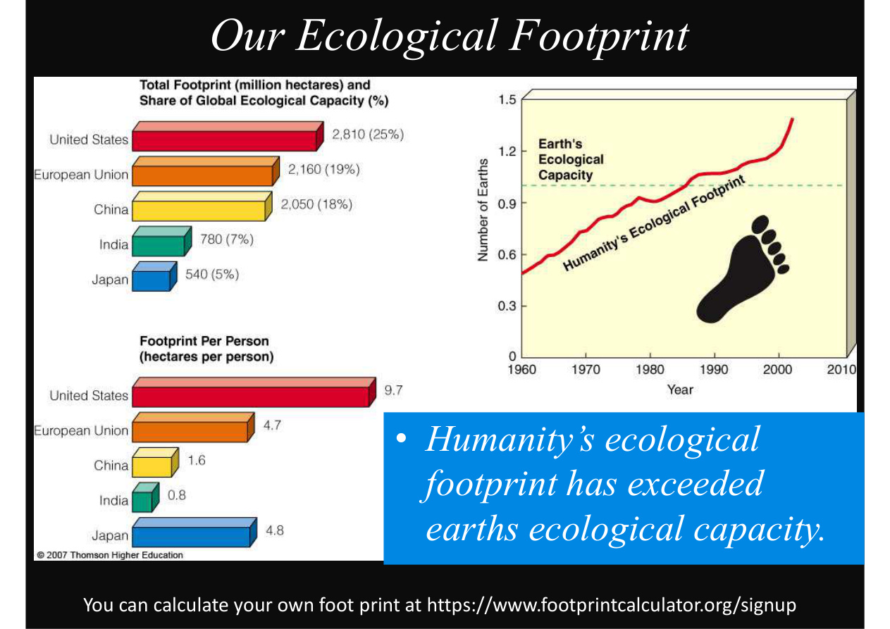
Our Ecological Footprint
- •Our Ecological Footprint • Humanity’s ecological footprint has exceeded earths ecological capacity.
This slide presents essential concepts in Lecture 02: Our Ecological Footprint. Specifically, it examines Our Ecological Footprint • Humanity’s ecological footprint has exceeded earths ecological capacity.. In the broader context of Earth spheres (Atmosphere, Hydrosphere, Lithosphere, Biosphere), Garrett Hardin's Tragedy of the Commons (1968), IPAT identity (I = P x A x T), Easter Island collapse, Baltic Sea algal blooms, Sacred Groves, Kolleru Lake degradation, ecological footprint, biocapacity, Earth Overshoot Day, and Human Development Index (HDI)., mastering this material is critical for analyzing ecological tradeoffs, regulatory frameworks, and exam questions on environmental system dynamics.
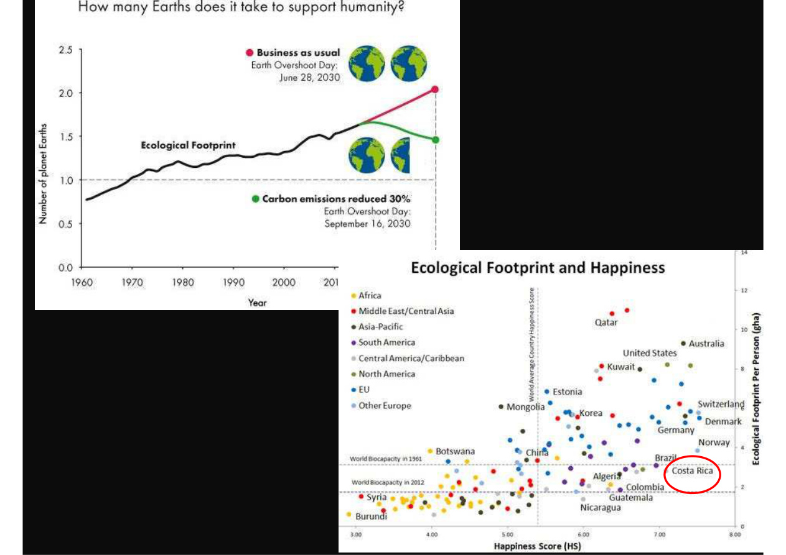
Slide 34
Visual figure / diagram presentation slide. Review the high-resolution render on the left.
This visual slide in Lecture 02 illustrates core structural mechanisms and empirical data for Slide 34. It provides essential visual context within the curriculum of Earth spheres (Atmosphere, Hydrosphere, Lithosphere, Biosphere), Garrett Hardin's Tragedy of the Commons (1968), IPAT identity (I = P x A x T), Easter Island collapse, Baltic Sea algal blooms, Sacred Groves, Kolleru Lake degradation, ecological footprint, biocapacity, Earth Overshoot Day, and Human Development Index (HDI)., directly connecting theoretical principles with real-world environmental technology observations.
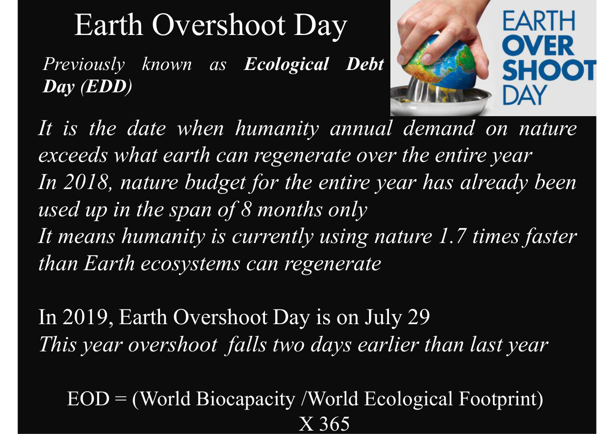
Earth Overshoot Day
- •Earth Overshoot Day It is the date when humanity annual demand on nature exceeds what earth can regenerate over the entire year In 2018, nature budget for the entire year has already been
This slide presents essential concepts in Lecture 02: Earth Overshoot Day. Specifically, it examines Earth Overshoot Day It is the date when humanity annual demand on nature exceeds what earth can regenerate over the entire year In 2018, nature budget for the entire year has already been. In the broader context of Earth spheres (Atmosphere, Hydrosphere, Lithosphere, Biosphere), Garrett Hardin's Tragedy of the Commons (1968), IPAT identity (I = P x A x T), Easter Island collapse, Baltic Sea algal blooms, Sacred Groves, Kolleru Lake degradation, ecological footprint, biocapacity, Earth Overshoot Day, and Human Development Index (HDI)., mastering this material is critical for analyzing ecological tradeoffs, regulatory frameworks, and exam questions on environmental system dynamics.
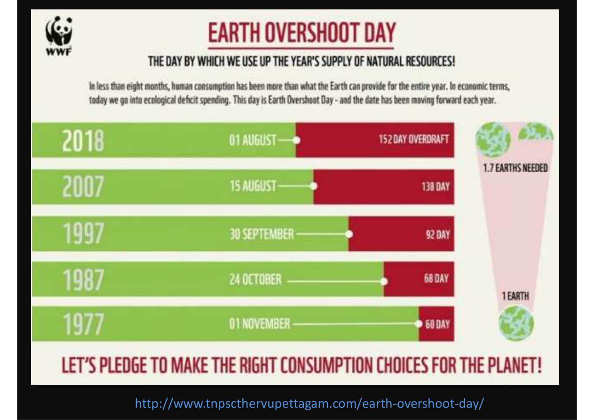
http://www.tnpscthervupettagam.com/earth-overshoot-day/
Visual figure / diagram presentation slide. Review the high-resolution render on the left.
This slide presents essential concepts in Lecture 02: http://www.tnpscthervupettagam.com/earth-overshoot-day/. Specifically, it examines http://www.tnpscthervupettagam.com/earth-overshoot-day/. In the broader context of Earth spheres (Atmosphere, Hydrosphere, Lithosphere, Biosphere), Garrett Hardin's Tragedy of the Commons (1968), IPAT identity (I = P x A x T), Easter Island collapse, Baltic Sea algal blooms, Sacred Groves, Kolleru Lake degradation, ecological footprint, biocapacity, Earth Overshoot Day, and Human Development Index (HDI)., mastering this material is critical for analyzing ecological tradeoffs, regulatory frameworks, and exam questions on environmental system dynamics.
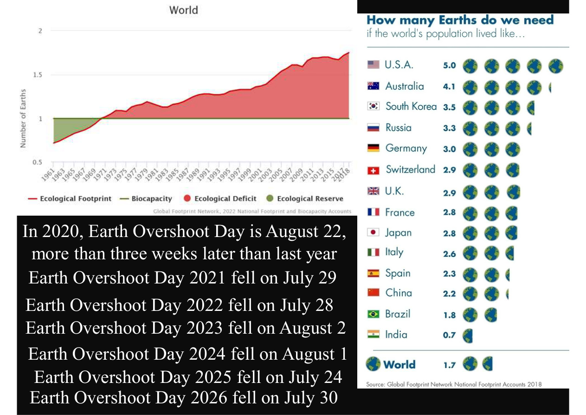
In 2020, Earth Overshoot Day is August 22,
- •In 2020, Earth Overshoot Day is August 22, more than three weeks later than last year Earth Overshoot Day 2022 fell on July 28 Earth Overshoot Day 2024 fell on August 1
This slide presents essential concepts in Lecture 02: In 2020, Earth Overshoot Day is August 22,. Specifically, it examines In 2020, Earth Overshoot Day is August 22, more than three weeks later than last year Earth Overshoot Day 2022 fell on July 28 Earth Overshoot Day 2024 fell on August 1. In the broader context of Earth spheres (Atmosphere, Hydrosphere, Lithosphere, Biosphere), Garrett Hardin's Tragedy of the Commons (1968), IPAT identity (I = P x A x T), Easter Island collapse, Baltic Sea algal blooms, Sacred Groves, Kolleru Lake degradation, ecological footprint, biocapacity, Earth Overshoot Day, and Human Development Index (HDI)., mastering this material is critical for analyzing ecological tradeoffs, regulatory frameworks, and exam questions on environmental system dynamics.
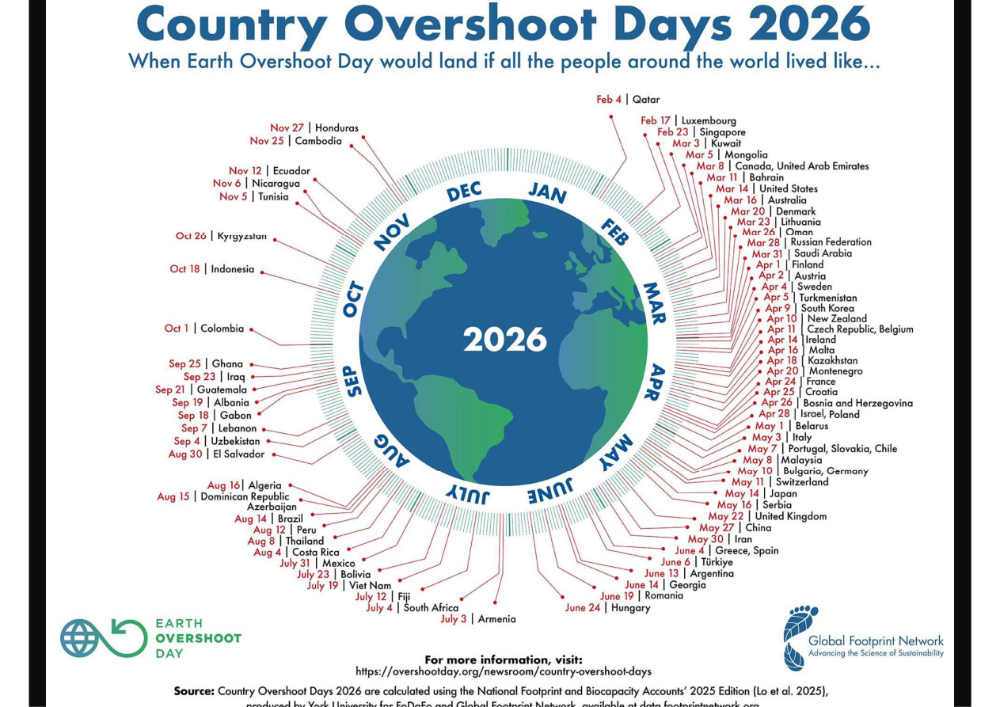
Slide 38
Visual figure / diagram presentation slide. Review the high-resolution render on the left.
This visual slide in Lecture 02 illustrates core structural mechanisms and empirical data for Slide 38. It provides essential visual context within the curriculum of Earth spheres (Atmosphere, Hydrosphere, Lithosphere, Biosphere), Garrett Hardin's Tragedy of the Commons (1968), IPAT identity (I = P x A x T), Easter Island collapse, Baltic Sea algal blooms, Sacred Groves, Kolleru Lake degradation, ecological footprint, biocapacity, Earth Overshoot Day, and Human Development Index (HDI)., directly connecting theoretical principles with real-world environmental technology observations.
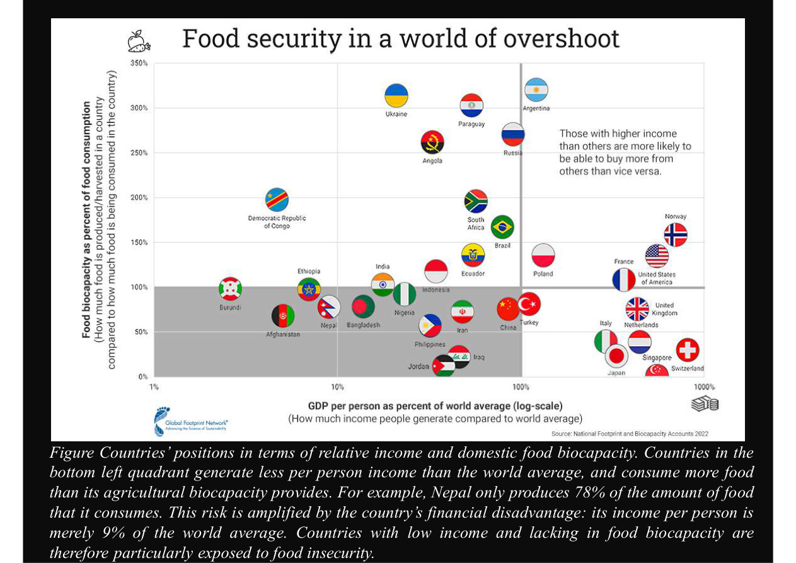
Figure Countries’ positions in terms of relative income and do...
- •Figure Countries’ positions in terms of relative income and domestic food biocapacity. Countries in the bottom left quadrant generate less per person income than the world average, and consume more food than its agricultural biocapacity provides. For example, Nepal only produces 78% of the amount of food that it consumes. This risk is amplified by the country’s financial disadvantage: its income per person is
This slide presents essential concepts in Lecture 02: Figure Countries’ positions in terms of relative income and do.... Specifically, it examines Figure Countries’ positions in terms of relative income and domestic food biocapacity. Countries in the bottom left quadrant generate less per person income than the world average, and consume more food than its agricultural biocapacity provides. For example, Nepal only produces 78% of the amount of food that it consumes. This risk is amplified by the country’s financial disadvantage: its income per person is. In the broader context of Earth spheres (Atmosphere, Hydrosphere, Lithosphere, Biosphere), Garrett Hardin's Tragedy of the Commons (1968), IPAT identity (I = P x A x T), Easter Island collapse, Baltic Sea algal blooms, Sacred Groves, Kolleru Lake degradation, ecological footprint, biocapacity, Earth Overshoot Day, and Human Development Index (HDI)., mastering this material is critical for analyzing ecological tradeoffs, regulatory frameworks, and exam questions on environmental system dynamics.
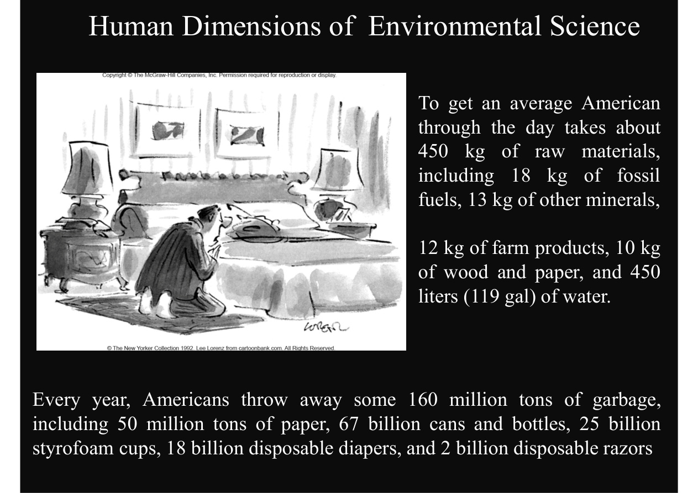
Human Dimensions of Environmental Science
- •Human Dimensions of Environmental Science Every year, Americans throw away some 160 million tons of garbage, including 50 million tons of paper, 67 billion cans and bottles, 25 billion styrofoam cups, 18 billion disposable diapers, and 2 billion disposable razors
This slide presents essential concepts in Lecture 02: Human Dimensions of Environmental Science. Specifically, it examines Human Dimensions of Environmental Science Every year, Americans throw away some 160 million tons of garbage, including 50 million tons of paper, 67 billion cans and bottles, 25 billion styrofoam cups, 18 billion disposable diapers, and 2 billion disposable razors. In the broader context of Earth spheres (Atmosphere, Hydrosphere, Lithosphere, Biosphere), Garrett Hardin's Tragedy of the Commons (1968), IPAT identity (I = P x A x T), Easter Island collapse, Baltic Sea algal blooms, Sacred Groves, Kolleru Lake degradation, ecological footprint, biocapacity, Earth Overshoot Day, and Human Development Index (HDI)., mastering this material is critical for analyzing ecological tradeoffs, regulatory frameworks, and exam questions on environmental system dynamics.
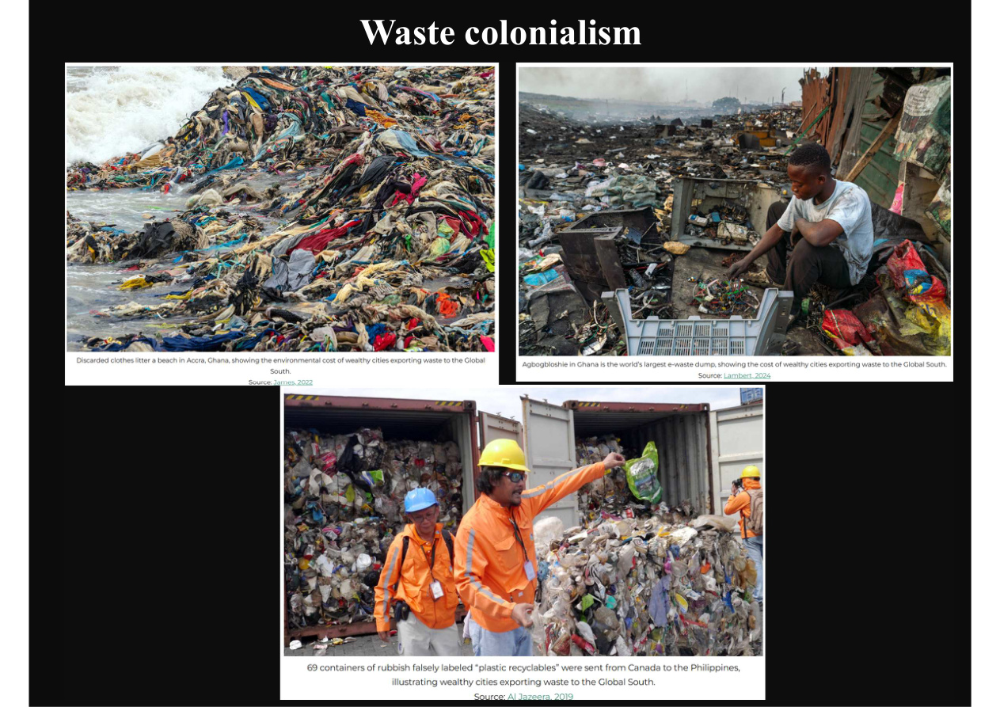
Waste colonialism
- •Waste colonialism
This visual slide in Lecture 02 illustrates core structural mechanisms and empirical data for Waste colonialism. It provides essential visual context within the curriculum of Earth spheres (Atmosphere, Hydrosphere, Lithosphere, Biosphere), Garrett Hardin's Tragedy of the Commons (1968), IPAT identity (I = P x A x T), Easter Island collapse, Baltic Sea algal blooms, Sacred Groves, Kolleru Lake degradation, ecological footprint, biocapacity, Earth Overshoot Day, and Human Development Index (HDI)., directly connecting theoretical principles with real-world environmental technology observations.
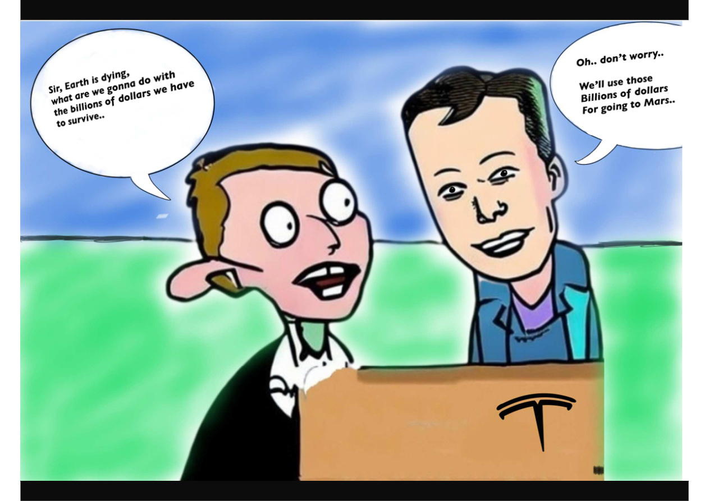
Slide 42
Visual figure / diagram presentation slide. Review the high-resolution render on the left.
This visual slide in Lecture 02 illustrates core structural mechanisms and empirical data for Slide 42. It provides essential visual context within the curriculum of Earth spheres (Atmosphere, Hydrosphere, Lithosphere, Biosphere), Garrett Hardin's Tragedy of the Commons (1968), IPAT identity (I = P x A x T), Easter Island collapse, Baltic Sea algal blooms, Sacred Groves, Kolleru Lake degradation, ecological footprint, biocapacity, Earth Overshoot Day, and Human Development Index (HDI)., directly connecting theoretical principles with real-world environmental technology observations.
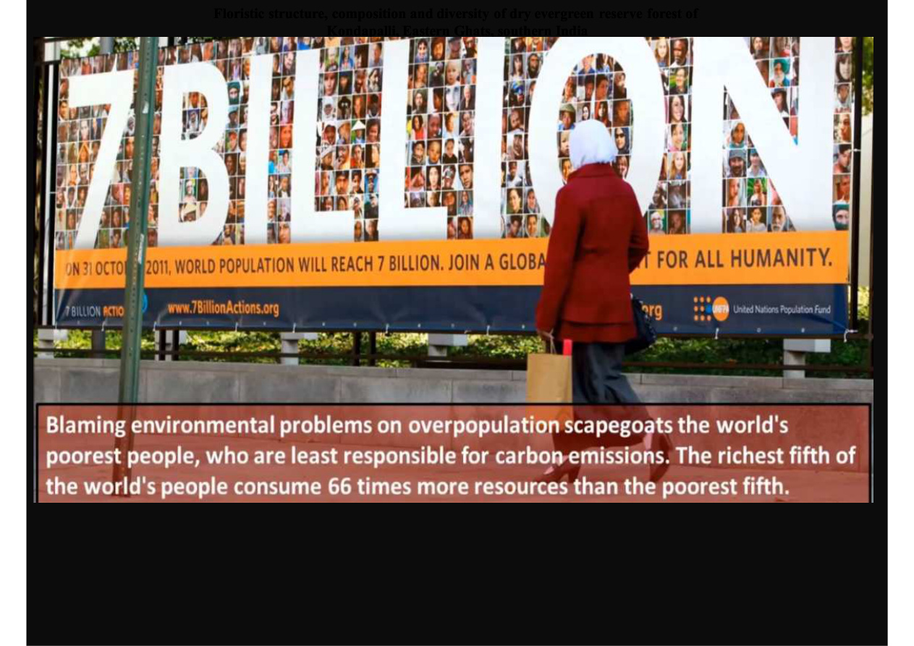
Floristic structure, composition and diversity of dry evergree...
- •Floristic structure, composition and diversity of dry evergreen reserve forest of Kondapalli, Eastern Ghats, southern India Floristic structure, composition and diversity of dry evergreen reserve forest of Kondapalli, Eastern Ghats, southern India
This slide presents essential concepts in Lecture 02: Floristic structure, composition and diversity of dry evergree.... Specifically, it examines Floristic structure, composition and diversity of dry evergreen reserve forest of Kondapalli, Eastern Ghats, southern India Floristic structure, composition and diversity of dry evergreen reserve forest of Kondapalli, Eastern Ghats, southern India. In the broader context of Earth spheres (Atmosphere, Hydrosphere, Lithosphere, Biosphere), Garrett Hardin's Tragedy of the Commons (1968), IPAT identity (I = P x A x T), Easter Island collapse, Baltic Sea algal blooms, Sacred Groves, Kolleru Lake degradation, ecological footprint, biocapacity, Earth Overshoot Day, and Human Development Index (HDI)., mastering this material is critical for analyzing ecological tradeoffs, regulatory frameworks, and exam questions on environmental system dynamics.
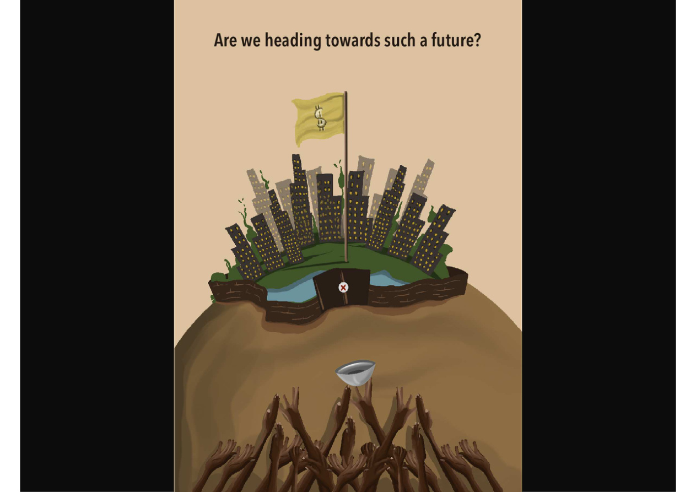
Slide 44
Visual figure / diagram presentation slide. Review the high-resolution render on the left.
This visual slide in Lecture 02 illustrates core structural mechanisms and empirical data for Slide 44. It provides essential visual context within the curriculum of Earth spheres (Atmosphere, Hydrosphere, Lithosphere, Biosphere), Garrett Hardin's Tragedy of the Commons (1968), IPAT identity (I = P x A x T), Easter Island collapse, Baltic Sea algal blooms, Sacred Groves, Kolleru Lake degradation, ecological footprint, biocapacity, Earth Overshoot Day, and Human Development Index (HDI)., directly connecting theoretical principles with real-world environmental technology observations.
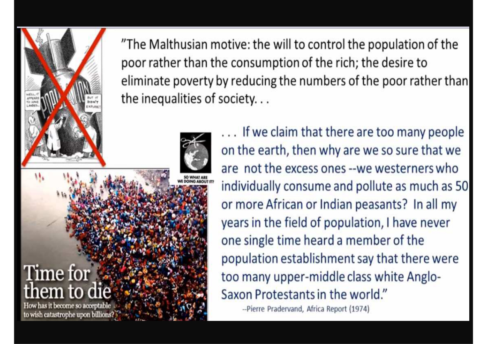
Slide 45
Visual figure / diagram presentation slide. Review the high-resolution render on the left.
This visual slide in Lecture 02 illustrates core structural mechanisms and empirical data for Slide 45. It provides essential visual context within the curriculum of Earth spheres (Atmosphere, Hydrosphere, Lithosphere, Biosphere), Garrett Hardin's Tragedy of the Commons (1968), IPAT identity (I = P x A x T), Easter Island collapse, Baltic Sea algal blooms, Sacred Groves, Kolleru Lake degradation, ecological footprint, biocapacity, Earth Overshoot Day, and Human Development Index (HDI)., directly connecting theoretical principles with real-world environmental technology observations.
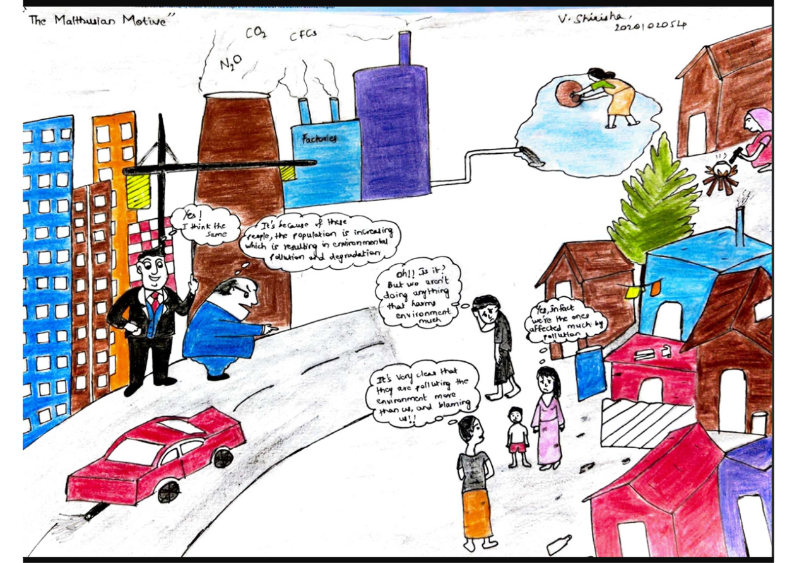
Slide 46
Visual figure / diagram presentation slide. Review the high-resolution render on the left.
This visual slide in Lecture 02 illustrates core structural mechanisms and empirical data for Slide 46. It provides essential visual context within the curriculum of Earth spheres (Atmosphere, Hydrosphere, Lithosphere, Biosphere), Garrett Hardin's Tragedy of the Commons (1968), IPAT identity (I = P x A x T), Easter Island collapse, Baltic Sea algal blooms, Sacred Groves, Kolleru Lake degradation, ecological footprint, biocapacity, Earth Overshoot Day, and Human Development Index (HDI)., directly connecting theoretical principles with real-world environmental technology observations.
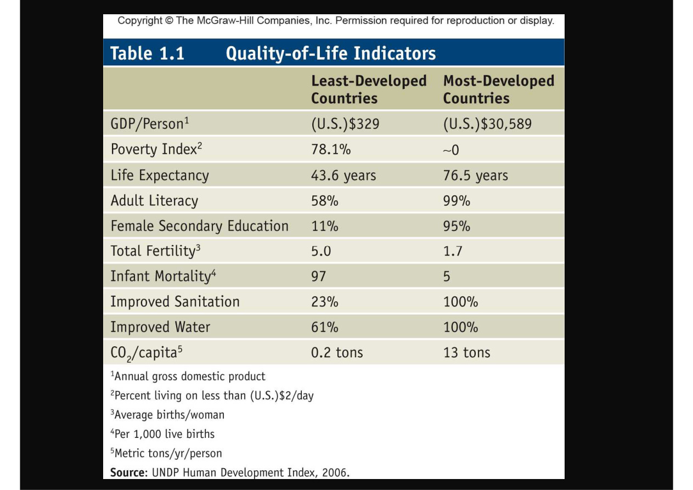
Slide 47
Visual figure / diagram presentation slide. Review the high-resolution render on the left.
This visual slide in Lecture 02 illustrates core structural mechanisms and empirical data for Slide 47. It provides essential visual context within the curriculum of Earth spheres (Atmosphere, Hydrosphere, Lithosphere, Biosphere), Garrett Hardin's Tragedy of the Commons (1968), IPAT identity (I = P x A x T), Easter Island collapse, Baltic Sea algal blooms, Sacred Groves, Kolleru Lake degradation, ecological footprint, biocapacity, Earth Overshoot Day, and Human Development Index (HDI)., directly connecting theoretical principles with real-world environmental technology observations.
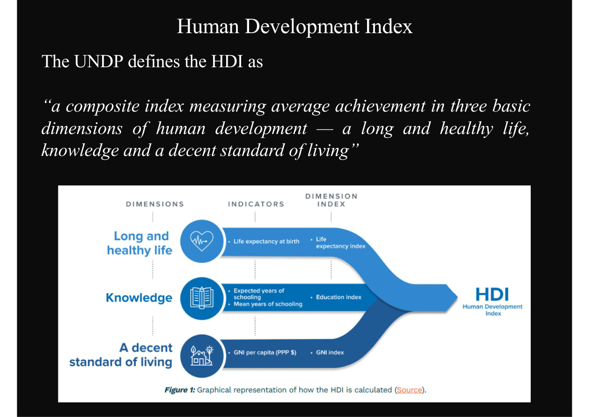
Human Development Index
- •Human Development Index The UNDP defines the HDI as “a composite index measuring average achievement in three basic dimensions of human development — a long and healthy life,
This slide presents essential concepts in Lecture 02: Human Development Index. Specifically, it examines Human Development Index The UNDP defines the HDI as “a composite index measuring average achievement in three basic dimensions of human development — a long and healthy life,. In the broader context of Earth spheres (Atmosphere, Hydrosphere, Lithosphere, Biosphere), Garrett Hardin's Tragedy of the Commons (1968), IPAT identity (I = P x A x T), Easter Island collapse, Baltic Sea algal blooms, Sacred Groves, Kolleru Lake degradation, ecological footprint, biocapacity, Earth Overshoot Day, and Human Development Index (HDI)., mastering this material is critical for analyzing ecological tradeoffs, regulatory frameworks, and exam questions on environmental system dynamics.
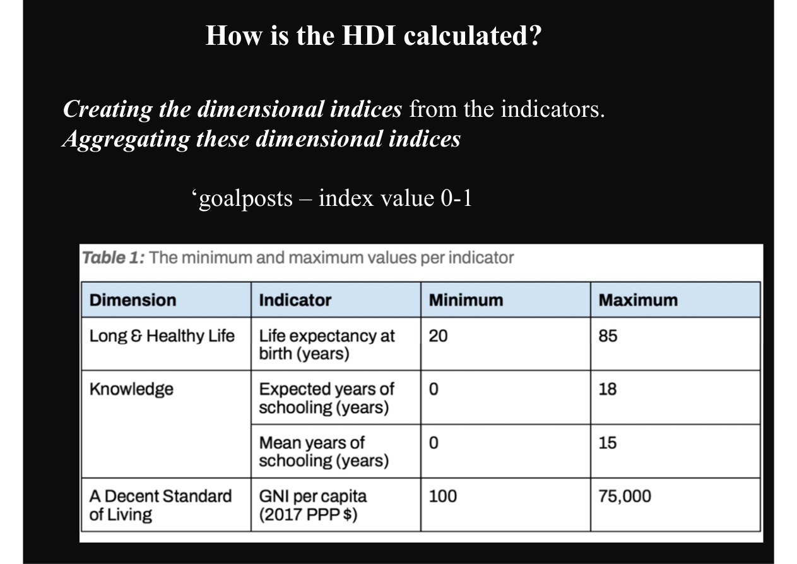
How is the HDI calculated?
- •How is the HDI calculated? Creating the dimensional indices from the indicators. Aggregating these dimensional indices ‘goalposts – index value 0-1
This slide presents essential concepts in Lecture 02: How is the HDI calculated?. Specifically, it examines How is the HDI calculated? Creating the dimensional indices from the indicators. Aggregating these dimensional indices ‘goalposts – index value 0-1. In the broader context of Earth spheres (Atmosphere, Hydrosphere, Lithosphere, Biosphere), Garrett Hardin's Tragedy of the Commons (1968), IPAT identity (I = P x A x T), Easter Island collapse, Baltic Sea algal blooms, Sacred Groves, Kolleru Lake degradation, ecological footprint, biocapacity, Earth Overshoot Day, and Human Development Index (HDI)., mastering this material is critical for analyzing ecological tradeoffs, regulatory frameworks, and exam questions on environmental system dynamics.
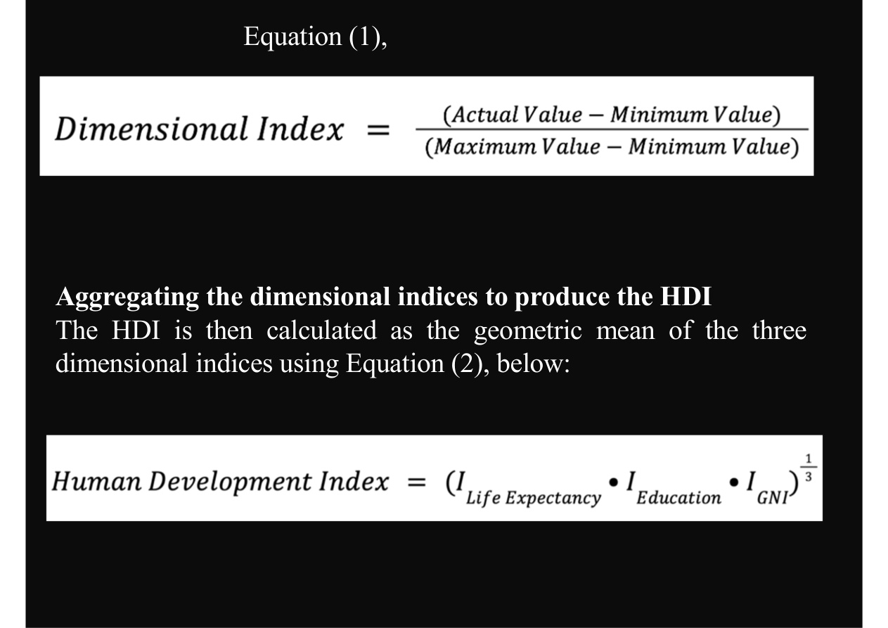
Aggregating the dimensional indices to produce the HDI
- •Aggregating the dimensional indices to produce the HDI The HDI is then calculated as the geometric mean of the three dimensional indices using Equation (2), below: Equation (1),
This slide presents essential concepts in Lecture 02: Aggregating the dimensional indices to produce the HDI. Specifically, it examines Aggregating the dimensional indices to produce the HDI The HDI is then calculated as the geometric mean of the three dimensional indices using Equation (2), below: Equation (1),. In the broader context of Earth spheres (Atmosphere, Hydrosphere, Lithosphere, Biosphere), Garrett Hardin's Tragedy of the Commons (1968), IPAT identity (I = P x A x T), Easter Island collapse, Baltic Sea algal blooms, Sacred Groves, Kolleru Lake degradation, ecological footprint, biocapacity, Earth Overshoot Day, and Human Development Index (HDI)., mastering this material is critical for analyzing ecological tradeoffs, regulatory frameworks, and exam questions on environmental system dynamics.
Slide 51
Visual figure / diagram presentation slide. Review the high-resolution render on the left.
This visual slide in Lecture 02 illustrates core structural mechanisms and empirical data for Slide 51. It provides essential visual context within the curriculum of Earth spheres (Atmosphere, Hydrosphere, Lithosphere, Biosphere), Garrett Hardin's Tragedy of the Commons (1968), IPAT identity (I = P x A x T), Easter Island collapse, Baltic Sea algal blooms, Sacred Groves, Kolleru Lake degradation, ecological footprint, biocapacity, Earth Overshoot Day, and Human Development Index (HDI)., directly connecting theoretical principles with real-world environmental technology observations.
https://ourworldindata.org/grapher/human-development-index?tim...
Visual figure / diagram presentation slide. Review the high-resolution render on the left.
This slide presents essential concepts in Lecture 02: https://ourworldindata.org/grapher/human-development-index?tim.... Specifically, it examines https://ourworldindata.org/grapher/human-development-index?time=2023. In the broader context of Earth spheres (Atmosphere, Hydrosphere, Lithosphere, Biosphere), Garrett Hardin's Tragedy of the Commons (1968), IPAT identity (I = P x A x T), Easter Island collapse, Baltic Sea algal blooms, Sacred Groves, Kolleru Lake degradation, ecological footprint, biocapacity, Earth Overshoot Day, and Human Development Index (HDI)., mastering this material is critical for analyzing ecological tradeoffs, regulatory frameworks, and exam questions on environmental system dynamics.
Slide 53
Visual figure / diagram presentation slide. Review the high-resolution render on the left.
This visual slide in Lecture 02 illustrates core structural mechanisms and empirical data for Slide 53. It provides essential visual context within the curriculum of Earth spheres (Atmosphere, Hydrosphere, Lithosphere, Biosphere), Garrett Hardin's Tragedy of the Commons (1968), IPAT identity (I = P x A x T), Easter Island collapse, Baltic Sea algal blooms, Sacred Groves, Kolleru Lake degradation, ecological footprint, biocapacity, Earth Overshoot Day, and Human Development Index (HDI)., directly connecting theoretical principles with real-world environmental technology observations.
IHDI - how unequally those
- •IHDI - how unequally those achievements are distributed among its people
This slide presents essential concepts in Lecture 02: IHDI - how unequally those. Specifically, it examines IHDI - how unequally those achievements are distributed among its people. In the broader context of Earth spheres (Atmosphere, Hydrosphere, Lithosphere, Biosphere), Garrett Hardin's Tragedy of the Commons (1968), IPAT identity (I = P x A x T), Easter Island collapse, Baltic Sea algal blooms, Sacred Groves, Kolleru Lake degradation, ecological footprint, biocapacity, Earth Overshoot Day, and Human Development Index (HDI)., mastering this material is critical for analyzing ecological tradeoffs, regulatory frameworks, and exam questions on environmental system dynamics.
Indigenous peoples are guardians
- •Indigenous peoples are guardians of much of the world’s biodiversity • Often, the 500 million indigenous people who
This slide presents essential concepts in Lecture 02: Indigenous peoples are guardians. Specifically, it examines Indigenous peoples are guardians of much of the world’s biodiversity • Often, the 500 million indigenous people who. In the broader context of Earth spheres (Atmosphere, Hydrosphere, Lithosphere, Biosphere), Garrett Hardin's Tragedy of the Commons (1968), IPAT identity (I = P x A x T), Easter Island collapse, Baltic Sea algal blooms, Sacred Groves, Kolleru Lake degradation, ecological footprint, biocapacity, Earth Overshoot Day, and Human Development Index (HDI)., mastering this material is critical for analyzing ecological tradeoffs, regulatory frameworks, and exam questions on environmental system dynamics.
Importance of Indigenous Peoples’ lands for the conservation of
- •Importance of Indigenous Peoples’ lands for the conservation of Intact Forest Landscapes Frontiers in Ecol & Environ, Volume: 18, Issue: 3, Pages: 135-140, First published: 06 January 2020, DOI: (10.1002/fee.2148)
This slide presents essential concepts in Lecture 02: Importance of Indigenous Peoples’ lands for the conservation of. Specifically, it examines Importance of Indigenous Peoples’ lands for the conservation of Intact Forest Landscapes Frontiers in Ecol & Environ, Volume: 18, Issue: 3, Pages: 135-140, First published: 06 January 2020, DOI: (10.1002/fee.2148). In the broader context of Earth spheres (Atmosphere, Hydrosphere, Lithosphere, Biosphere), Garrett Hardin's Tragedy of the Commons (1968), IPAT identity (I = P x A x T), Easter Island collapse, Baltic Sea algal blooms, Sacred Groves, Kolleru Lake degradation, ecological footprint, biocapacity, Earth Overshoot Day, and Human Development Index (HDI)., mastering this material is critical for analyzing ecological tradeoffs, regulatory frameworks, and exam questions on environmental system dynamics.
Conservation and Environmental Thought
- •Conservation and Environmental Thought Pragmatic Resource Conservation (Utilitarian Conservation) Global Environmental Citizenship
This slide presents essential concepts in Lecture 02: Conservation and Environmental Thought. Specifically, it examines Conservation and Environmental Thought Pragmatic Resource Conservation (Utilitarian Conservation) Global Environmental Citizenship. In the broader context of Earth spheres (Atmosphere, Hydrosphere, Lithosphere, Biosphere), Garrett Hardin's Tragedy of the Commons (1968), IPAT identity (I = P x A x T), Easter Island collapse, Baltic Sea algal blooms, Sacred Groves, Kolleru Lake degradation, ecological footprint, biocapacity, Earth Overshoot Day, and Human Development Index (HDI)., mastering this material is critical for analyzing ecological tradeoffs, regulatory frameworks, and exam questions on environmental system dynamics.
🌐 Earth Radiation Budget & Greenhouse Equilibrium Calculator
Compute effective emitting temperature and surface greenhouse temperature by adjusting fundamental radiation parameters.
Active Recall Flashcards
Test yourself on essential slide definitions, reactions, and principles before flipping.
Exam Traps, Fallacies & Professor Emphasis Points
Common student misconceptions and subtle distinctions tested in Midsem and Endsem exams.
- ⚠️ Trap: Confusing solar constant $S_0$ with average incident flux. Solar constant is measured perpendicular to beam ($1361\,\text{W/m}^2$), but Earth's surface area ($4\pi R^2$) is 4 times its cross-sectional area ($\pi R^2$), making average incident flux $S_0 / 4 \approx 340\,\text{W/m}^2$.
- ⚠️ Trap: Misidentifying the atmospheric window. The atmospheric window is in the thermal infrared spectrum ($8 - 12\,\mu\text{m}$), where clear atmosphere absorbs little radiation, allowing heat to escape directly to space.
Concept Check Quiz
Instant feedback on core conceptual and quantitative questions from the lecture slides.
Complete Slide Deck Quick-Jump Gallery
Quick visual reference of all 57 slides across this lecture deck with PDF downloads.